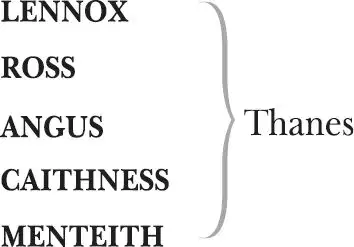

The Tragedy of Macbeth
KING DUNCAN of Scotland
A CAPTAIN in Duncan's army
MACBETH , Thane of Glamis, later Thane of Cawdor, then King of Scotland
LADY MACBETH , his wife
A PORTER at Macbeth's castle
SEYTON , servant to Macbeth
A DOCTOR
A GENTLEWOMAN , attendant upon Lady Macbeth
THREE MURDERERS
BANQUO , a thane
FLEANCE , his son
MACDUFF , Thane of Fife
LADY MACDUFF , his wife
MACDUFF's SON

AN OLD MAN
SIWARD , Earl of Northumberland
YOUNG SIWARD , his son
DOCTOR at the English court
THREE WITCHES , known as Weyard Sisters
HECATE , Queen of Witches
Lords, Thanes, Attendants, Servants, Torchbearers,
Soldiers, Drummers, a Messenger, Apparitions
(including an armed head, a bloody child, a child
crowned, a show of eight kings)
Act 1
Scene 1 1 ／ running scene 1
Thunder and lightning. Enter three Witches
FIRST WITCH When shall we three meet again?
In thunder, lightning, or in rain?
SECOND WITCH When the hurly-burly 2 's done,
When the battle's lost and won.
THIRD WITCH That will be ere 3 the set of sun.
FIRST WITCH Where the place?
SECOND WITCH Upon the heath.
THIRD WITCH There to meet with Macbeth.
FIRST WITCH I come, Grey Malkin 4 .
SECOND WITCH Paddock 5 calls.
THIRD WITCH Anon 6 .
ALL Fair is foul, and foul is fair:
Hover through the fog and filthy air.
Exeunt
Scene 2 7 ／ running scene 2
Alarum within. Enter King [Duncan ], Malcolm, Donalbain, Lennox, with Attendants, meeting a bleeding Captain
DUNCAN What bloody man is that? He can report,
As seemeth by his plight 8 , of the revolt
The newest state 9 .
MALCOLM This is the sergeant
Who like a good and hardy 10 soldier fought
Gainst my captivity 11 .— Hail, brave friend;
To the Captain
Say to the king the knowledge of the broil 12
As thou didst leave it.
CAPTAIN Doubtful it stood,
As two spent 13 swimmers that do cling together
And choke their art 14 . The merciless Macdonald —
Worthy to be a rebel, for to that 15
The multiplying villainies of nature 16
Do swarm upon him — from the Western Isles 17
Of kerns 18 and gallowglasses 19 is supplied 20 ,
And Fortune on his damnèd quarrel 21 smiling,
Showed 22 like a rebel's whore. But all's too weak,
For brave Macbeth — well he deserves that name —
Disdaining Fortune, with his brandished 23 steel
Which smoked with bloody execution,
Like valour's minion 24 carved out his passage 25
Till he faced the slave 26 ,
Which 27 ne'er shook hands nor bade farewell to him
Till he unseamed him 28 from the nave to th'chops 29
And fixed his head upon our battlements.
DUNCAN O valiant cousin, worthy gentleman!
CAPTAIN As whence the sun 'gins 30 his reflection 31 ,
Shipwrecking storms and direful thunders 32 ,
So from that spring 33 whence comfort 34 seemed to come,
Discomfort swells 35 . Mark 36 , King of Scotland, mark:
No sooner justice had, with valour armed,
Compelled these skipping 37 kerns to trust their heels 38 ,
But the Norwegian lord 39 , surveying vantage 40 ,
With furbished 41 arms and new supplies of men,
Began a fresh assault.
DUNCAN Dismayed not this our captains, Macbeth and Banquo?
CAPTAIN Yes, as sparrows eagles, or the hare the lion 42 .
If I say sooth 43 , I must report 44 they were
As cannons overcharged with double cracks 45 ,
So they doubly redoubled strokes upon the foe.
Except 46 they meant to bathe in reeking 47 wounds
Or memorize 48 another Golgotha 49 ,
I cannot tell.
But I am faint, my gashes cry for help.
DUNCAN So well thy words become 50 thee as thy wounds:
They smack 51 of honour both.— Go get him surgeons.
[Exit Captain, attended ]
Enter Ross and Angus
Who comes here?
MALCOLM The worthy Thane 52 of Ross.
LENNOX What a haste looks through 53 his eyes!
So should he look that seems to 54 speak things strange.
ROSS God save the king.
DUNCAN Whence cam'st thou, worthy thane?
ROSS From Fife 55 , great king,
Where the Norwegian banners flout 56 the sky
And fan our people cold.
Norway himself 57 , with terrible numbers 58 ,
Assisted by that most disloyal traitor,
The Thane of Cawdor, began a dismal 59 conflict
Till that Bellona 60 's bridegroom 61 , lapped in proof 62 ,
Confronted him with self-comparisons 63 ,
Point 64 against point, rebellious arm 65 gainst arm,
Curbing his lavish 66 spirit: and to conclude,
The victory fell on us—
DUNCAN Great happiness.
ROSS That now Sweno, the Norways' 67 king,
Craves composition 68 :
Nor would we deign 69 him burial of his men
Till he disbursèd 70 at Saint Colme's inch 71
Ten thousand dollars 72 to our general use.
DUNCAN No more that Thane of Cawdor shall deceive
Our bosom interest 73 : go pronounce his present 74 death,
And with his former title greet Macbeth.
ROSS I'll see it done.
DUNCAN What he hath lost, noble Macbeth hath won.
Exeunt
Scene 3 75 ／ running scene 3
Thunder. Enter the three Witches
FIRST WITCH Where hast thou been, sister?
SECOND WITCH Killing swine.
THIRD WITCH Sister, where thou?
FIRST WITCH A sailor's wife had chestnuts in her lap,
And munched and munched and munched.
'Give me', quoth 76 I.
'Aroint thee 77 , witch!' the rump-fed 78 runnion 79 cries.
Her husband's to Aleppo 80 gone, master 81 o'th'Tiger :
But in a sieve I'll thither sail,
And like 82 a rat without a tail,
I'll do 83 , I'll do and I'll do.
SECOND WITCH I'll give thee a wind.
FIRST WITCH Thou'rt kind.
THIRD WITCH And I another 84 .
FIRST WITCH I myself have all the other,
And the very ports they blow 85 ,
All the quarters 86 that they know
I'th'shipman's card 87 .
I'll drain 88 him dry as hay:
Sleep shall neither night nor day
Hang upon his penthouse lid 89 :
He shall live a man forbid 90 :
Weary sennights 91 nine times nine
Shall he dwindle, peak and pine 92 .
Though his bark cannot be lost,
Yet 93 it shall be tempest-tossed 94 .
Look what I have.
SECOND WITCH Show me, show me.
FIRST WITCH Here I have a pilot 95 's thumb,
Wrecked as homeward he did come.
Drum within
THIRD WITCH A drum, a drum:
Macbeth doth come.
ALL The weyard 96 sisters, hand in hand,
They dance in a circle
Posters 97 of the sea and land,
Thus do go about, about,
Thrice to thine and thrice to mine
And thrice again, to make up nine 98 .
Peace 99 , the charm 100 's wound up 101 .
Enter Macbeth and Banquo
MACBETH So foul and fair 102 a day I have not seen.
BANQUO How far is't called 103 to Forres 104 ?— What are these,
So withered and so wild in their attire,
That look not like th'inhabitants o'th'earth
And yet are on't 105 ?— Live you, or are you aught 106
To Witches
That man may question? You seem to understand me
By each at once her choppy 107 finger laying
Upon her skinny lips. You should be 108 women,
And yet your beards forbid me to interpret
That you are so.
MACBETH Speak if you can: what are you?
FIRST WITCH All hail, Macbeth: hail to thee, Thane of Glamis!
SECOND WITCH All hail, Macbeth: hail to thee, Thane of Cawdor!
THIRD WITCH All hail, Macbeth, that shalt be king hereafter!
BANQUO Good sir, why do you start 109 and seem to fear
Things that do sound so fair?— I'th'name of truth,
To Witches
Are ye fantastical 110 or that indeed 111
Which outwardly ye show 112 ? My noble partner
You greet with present grace 113 and great prediction
Of noble having 114 and of royal hope,
That he seems rapt withal 115 : to me you speak not.
If you can look into the seeds of time
And say which grain will grow and which will not,
Speak then to me, who neither beg nor fear
Your favours nor your hate 116 .
FIRST WITCH Hail!
SECOND WITCH Hail!
THIRD WITCH Hail!
FIRST WITCH Lesser than Macbeth, and greater.
SECOND WITCH Not so happy 117 , yet much happier.
THIRD WITCH Thou shalt get 118 kings, though thou be none:
So all hail, Macbeth and Banquo!
FIRST WITCH Banquo and Macbeth, all hail!
MACBETH Stay, you imperfect 119 speakers: tell me more.
By Sinel 120 's death I know I am Thane of Glamis,
But how of Cawdor? The Thane of Cawdor lives,
A prosperous gentleman: and to be king
Stands not within the prospect 121 of belief,
No more than to be Cawdor. Say from whence
You owe this strange intelligence 122 or why
Upon this blasted 123 heath you stop our way
With such prophetic greeting? Speak, I charge 124 you.
Witches vanish
BANQUO The earth hath bubbles, as the water has,
And these are of them. Whither are they vanished?
MACBETH Into the air: and what seemed corporal 125
Melted as breath into the wind. Would 126 they had stayed.
BANQUO Were such things here as we do speak about?
Or have we eaten on 127 the insane root 128
That takes the reason prisoner?
MACBETH Your children shall be kings.
BANQUO You shall be king.
MACBETH And Thane of Cawdor too: went it not so?
BANQUO To th'selfsame 129 tune and words. Who's here?
Enter Ross and Angus
ROSS The king hath happily received, Macbeth,
The news of thy success, and when he reads 130
Thy personal venture 131 in the rebels' fight,
His wonders and his 132 praises do contend
Which should be thine or his: silenced with that,
In viewing o'er the rest o'th'selfsame day,
He finds thee in the stout 133 Norwegian ranks,
Nothing afeard 134 of what thyself didst make 135 ,
Strange images of death. As thick as tale
Can post with post 136 , and every one did bear
Thy praises in his kingdom's great defence,
And poured them down before him.
ANGUS We are sent
To give thee from our royal master thanks,
Only to herald thee 137 into his sight,
Not pay thee.
ROSS And for an earnest 138 of a greater honour,
He bade me, from him, call thee Thane of Cawdor:
In which addition 139 , hail, most worthy thane,
For it is thine.
BANQUO What, can the devil speak true?
MACBETH The Thane of Cawdor lives:
Why do you dress me in borrowed robes?
ANGUS Who 140 was the thane lives yet,
But under heavy judgement 141 bears that life
Which he deserves to lose.
Whether he was combined 142 with those of Norway,
Or did line 143 the rebel 144 with hidden help
And vantage, or that with both he laboured
In his country's wreck, I know not:
But treasons capital 145 , confessed and proved,
Have overthrown him.
MACBETH Glamis and Thane of Cawdor:
Aside
The greatest is behind 146 .— Thanks for your pains.—
To Ross and Angus
Do you not hope your children shall be kings
Aside to Banquo
When those that gave the Thane of Cawdor to me
Promised no less to them?
BANQUO That, trusted home 147 ,
Aside to Macbeth
Might yet enkindle 148 you unto the crown,
Besides the Thane of Cawdor. But 'tis strange:
And oftentimes, to win us to our harm,
The instruments of darkness 149 tell us truths,
Win us with honest trifles 150 , to betray's
In deepest consequence 151 .—
Cousins, a word, I pray you.
To Ross and Angus; they converse apart
MACBETH Two truths are told,
Aside
As happy 152 prologue 153 s to the swelling 154 act 155
Of the imperial theme 156 .—
I thank you, gentlemen.—
To Ross and Angus
This supernatural soliciting 157
Aside
Cannot be ill, cannot be good: if ill,
Why hath it given me earnest 158 of success
Commencing in a truth? I am Thane of Cawdor.
If good, why do I yield to that suggestion 159
Whose horrid 160 image doth unfix my hair 161
And make my seated 162 heart knock at my ribs
Against the use 163 of nature? Present fears
Are less 164 than horrible imaginings:
My thought, whose murder 165 yet is but fantastical,
Shakes so my single state 166 of man
That function is smothered in surmise 167 ,
And nothing is, but what is not 168 .
BANQUO Look how our partner's rapt.
MACBETH If chance will have me king, why, chance may crown me
Aside
Without my stir 169 .
BANQUO New honours come upon him,
Like our strange 170 garments, cleave not to their mould
But with the aid of use 171 .
MACBETH Come what come may,
Aside
Time and the hour runs through the roughest day 172 .
BANQUO Worthy Macbeth, we stay 173 upon your leisure.
MACBETH Give me your favour 174 :
My dull brain was wrought 175 with things forgotten.
Kind gentlemen, your pains are registered 176
Where every day I turn the leaf to read them 177 .
Let us toward the king.—
Think upon what hath chanced 178 , and at more time 179 ,
Aside to Banquo
The interim having weighed it 180 , let us speak
Our free 181 hearts each to other.
BANQUO Very gladly.
MACBETH Till then, enough.— Come, friends.
Exeunt
Scene 4 182 ／ running scene 4
Flourish. Enter King [Duncan ], Lennox, Malcolm, Donalbain and Attendants
DUNCAN Is execution done on Cawdor, or not 183
Those in commission 184 yet returned?
MALCOLM My liege 185 ,
They are not yet come back. But I have spoke
With one that saw him die, who did report
That very frankly he confessed his treasons,
Implored your highness' pardon and set forth
A deep repentance: nothing in his life
Became 186 him like the leaving it. He died
As one that had been studied 187 in his death
To throw away the dearest thing he owed 188
As 'twere a careless 189 trifle.
DUNCAN There's no art 190
To find the mind's construction 191 in the face:
He was a gentleman on whom I built
An absolute trust.—
Enter Macbeth, Banquo, Ross and Angus
O worthiest cousin,
The sin of my ingratitude even now
Was heavy on me. Thou art so far before 192
That swiftest wing of recompense is slow
To overtake thee. Would thou hadst less deserved,
That the proportion both of thanks and payment
Might have been mine 193 . Only I have left to say,
More is thy due than more than all 194 can pay.
MACBETH The service and the loyalty I owe,
In doing it, pays itself 195 . Your highness' part
Is to receive our duties, and our duties
Are to your throne and state, children and servants;
Which do but what they should by doing everything
Safe toward 196 your love and honour.
DUNCAN Welcome hither:
I have begun to plant thee and will labour
To make thee full of growing.— Noble Banquo,
That hast no less deserved, nor must be known
No less to have done so 197 , let me enfold 198 thee
Embraces him
And hold thee to my heart.
BANQUO There if I grow, the harvest is your own.
DUNCAN My plenteous joys,
Wanton 199 in fullness, seek to hide themselves
In drops of sorrow 200 .— Sons, kinsmen, thanes,
And you whose places are the nearest 201 , know
We will establish our estate 202 upon
Our eldest, Malcolm, whom we name hereafter
The Prince of Cumberland 203 , which honour must
Not unaccompanied invest 204 him only 205 ,
But signs of nobleness, like stars, shall shine
On all deservers.— From hence to Inverness 206 ,
To Macbeth
And bind us further to you 207 .
MACBETH The rest is labour which is not used for you 208 :
I'll be myself the harbinger 209 and make joyful
The hearing of my wife with your approach:
So humbly take my leave.
DUNCAN My worthy Cawdor.
MACBETH The Prince of Cumberland: that is a step
Aside
On which I must fall down or else o'erleap,
For in my way it lies. Stars, hide your fires:
Let not light see my black and deep desires.
The eye wink at the hand 210 ; yet let that be 211
Which the eye fears when it is done to see.
Exit
DUNCAN True, worthy Banquo, he is full so valiant 212 ,
And in his commendations 213 I am fed:
It is a banquet to me. Let's after him,
Whose care 214 is gone before to bid us welcome:
It is a peerless 215 kinsman.
Flourish. Exeunt.
Scene 5 216 ／ running scene 5
Enter Macbeth's Wife, alone with a letter
LADY MACBETH 'They met me in the day of success: and I have learned by the perfect'st report 217 , they have more in them than mortal knowledge. When I burned in desire to question them further, they made themselves air into which they vanished. Whiles I stood rapt in the wonder of it, came missives 218 from the king, who all-hailed me ''Thane of Cawdor'', by which title before, these weyard sisters saluted me, and referred me to the coming on of time with ''Hail, king that shalt be!'' This have I thought good to deliver thee 219 — my dearest partner of greatness — that thou mightst not lose the dues of rejoicing by being ignorant of what greatness is promised thee. Lay it to thy heart 220 , and farewell.'
Reads
Glamis thou art, and Cawdor, and shalt be
What thou art promised: yet do I fear thy nature:
It is too full o'th'milk of human kindness 221
To catch 222 the nearest 223 way. Thou wouldst 224 be great,
Art not without ambition, but without
The illness should attend it 225 . What thou wouldst highly 226 ,
That wouldst thou holily 227 : wouldst not play false 228 ,
And yet wouldst wrongly win. Thou'dst have 229 , great Glamis,
That which cries 'Thus thou must do' if thou have 230 it,
And that which rather thou dost fear to do
Than wishest should be undone 231 . Hie 232 thee hither,
That I may pour my spirits in thine ear
And chastise 233 with the valour of my tongue
All that impedes 234 thee from the golden round 235 ,
Which fate and metaphysical 236 aid doth seem
To have thee crowned withal 237 .—
Enter Messenger
What is your tidings?
MESSENGER The king comes here tonight.
LADY MACBETH Thou'rt mad to say it.
Is not thy master with him? Who, were't so,
Would have informed for preparation 238 ?
MESSENGER So please you, it is true: our thane is coming.
One of my fellows had the speed of 239 him,
Who, almost dead for breath, had scarcely more
Than would make up his message.
LADY MACBETH Give him tending 240 :
He brings great news.
Exit Messenger
The raven 241 himself is hoarse
That croaks the fatal entrance of Duncan
Under my battlements. Come, you spirits
That tend on 242 mortal 243 thoughts, unsex me here
And fill me from the crown to the toe top-full
Of direst cruelty. Make thick my blood,
Stop up th'access and passage to remorse 244 ,
That no compunctious 245 visitings of nature
Shake my fell 246 purpose, nor keep 247 peace between
Th'effect and it 248 . Come to my woman's breasts
And take 249 my milk for gall 250 , you murd'ring ministers 251 ,
Wherever in your sightless 252 substances
You wait on 253 nature's mischief 254 . Come, thick night,
And pall 255 thee in the dunnest 256 smoke of hell,
That my keen 257 knife see not the wound it makes,
Nor heaven peep through the blanket of the dark,
To cry 'Hold 258 , hold!'—
Enter Macbeth
Great Glamis, worthy Cawdor,
Greater than both by the all-hail hereafter 259 !
Thy letters have transported me beyond
This ignorant 260 present, and I feel now
The future in the instant 261 .
MACBETH My dearest love,
Duncan comes here tonight.
LADY MACBETH And when goes hence?
MACBETH Tomorrow, as he purposes 262 .
LADY MACBETH O, never
Shall sun that morrow see!
Your face, my thane, is as a book where men
May read strange 263 matters. To beguile 264 the time,
Look like the time 265 : bear welcome in your eye,
Your hand, your tongue: look like th'innocent flower,
But be the serpent under't. He that's coming
Must be provided for 266 , and you shall put
This night's great business into my dispatch 267 ,
Which shall to all our nights and days to come
Give solely 268 sovereign sway 269 and masterdom.
MACBETH We will speak further.
LADY MACBETH Only look up clear 270 :
To alter favour 271 ever is to fear.
Leave all the rest to me.
Exeunt
Scene 6 272 ／ running scene 6
Hautboys and Torches. Enter King [Duncan ], Malcolm, Donalbain, Banquo, Lennox, Macduff, Ross, Angus and Attendants
DUNCAN This castle hath a pleasant seat 273 : the air
Nimbly and sweetly recommends itself
Unto our gentle 274 senses.
BANQUO This guest of summer,
The temple-haunting 275 martlet 276 , does approve 277
By his loved mansionry 278 that the heaven's breath
Smells wooingly 279 here: no jutty 280 , frieze 281 ,
Buttress 282 , nor coign of vantage 283 , but this bird
Hath made his pendent 284 bed and procreant 285 cradle:
Where they most breed and haunt, I have observed
The air is delicate 286 .
Enter Lady [Macbeth ]
DUNCAN See, see, our honoured hostess.—
The love that follows us sometime is our trouble,
Which still we thank as love 287 . Herein I teach you
How you shall bid God yield 288 us for your pains 289 ,
And thank us for your trouble.
LADY MACBETH All our service
In every point 290 twice done, and then done double
Were poor and single 291 business 292 to contend
Against 293 those honours deep and broad wherewith
Your majesty loads our house: for those of old 294 ,
And the late 295 dignities heaped up to them,
We rest your hermits 296 .
DUNCAN Where's the Thane of Cawdor?
We coursed 297 him at the heels, and had a purpose
To be his purveyor 298 : but he rides well,
And his great love, sharp as his spur, hath holp 299 him
To his home before us. Fair and noble hostess,
We are your guest tonight.
LADY MACBETH Your servants ever
Have theirs 300 , themselves and what is theirs, in compt 301
To make their audit 302 at your highness' pleasure,
Still to return your own 303 .
DUNCAN Give me your hand,
Conduct me to mine host: we love him highly,
And shall continue our graces 304 towards him.
By your leave 305 , hostess.
Exeunt
Scene 7 306 ／ running scene 7
Hautboys. Torches. Enter a Sewer and divers Servants with dishes and service over the stage. Then enter Macbeth
MACBETH If it were done 307 when 'tis done, then 'twere well
It were done quickly: if th'assassination
Could trammel up 308 the consequence and catch 309
With his surcease 310 success 311 : that but 312 this blow
Might be the be-all and the end-all — here,
But here, upon this bank and shoal 313 of time,
We'd jump 314 the life to come. But in these cases
We still 315 have judgement here 316 , that 317 we but teach
Bloody instructions 318 , which, being taught, return
To plague th'inventor 319 : this even-handed justice
Commends 320 th'ingredients of our poisoned chalice 321
To our own lips. He's here in double trust:
First, as I am his kinsman and his subject,
Strong both 322 against the deed: then, as his host,
Who should against his murderer shut the door,
Not bear the knife myself. Besides, this Duncan
Hath borne his faculties 323 so meek, hath been
So clear 324 in his great office, that his virtues
Will plead like angels, trumpet-tongued, against
The deep damnation of his taking-off 325 :
And pity, like a naked new-born babe,
Striding 326 the blast 327 , or heaven's cherubin 328 , horsed 329
Upon the sightless couriers 330 of the air,
Shall blow the horrid deed in every eye,
That 331 tears shall drown the wind 332 . I have no spur
To prick the sides of my intent, but only
Vaulting ambition, which o'erleaps itself
And falls on th'other 333 .—
Enter Lady [Macbeth ]
How now? What news?
LADY MACBETH He has almost supped. Why have you left the chamber?
MACBETH Hath he asked for me?
LADY MACBETH Know you not he has?
MACBETH We will proceed no further in this business:
He hath honoured me of late, and I have bought 334
Golden opinions from all sorts of people,
Which would 335 be worn now in their newest gloss 336 ,
Not cast aside so soon.
LADY MACBETH Was the hope drunk
Wherein you dressed yourself? Hath it slept since?
And wakes it now, to look so green and pale
At what it did so freely? From this time
Such 337 I account 338 thy love. Art thou afeard
To be the same in thine own act and valour
As thou art in desire? 339 Wouldst thou have that
Which thou esteem'st 340 the ornament of life 341 342 ,
And live a coward in thine own esteem,
Letting 'I dare not' wait upon 343 'I would',
Like the poor cat i'th'adage 344 345 ?
MACBETH Prithee, peace.
I dare do 346 all that may become a man:
Who dares do more is none 347 .
LADY MACBETH What beast was't, then,
That made you break 348 this enterprise to me?
When you durst 349 do it, then you were a man:
And to be more than what you were, you would
Be so much more the man. Nor time nor place
Did then adhere 350 , and yet you would make both 351 :
They have made themselves, and that their fitness 352 now
Does unmake 353 you. I have given suck 354 , and know
How tender 'tis to love the babe that milks me:
I would, while it was smiling in my face,
Have plucked my nipple from his boneless gums,
And dashed the brains out, had I so sworn as you
Have done to this.
MACBETH If we should fail?
LADY MACBETH We fail?
But 355 screw your courage to the sticking-place 356 357
And we'll not fail. When Duncan is asleep —
Whereto the rather 358 shall his day's hard journey
Soundly invite him — his two chamberlains 359
Will I with wine and wassail 360 so convince 361 ,
That memory, the warder 362 of the brain,
Shall be a fume 363 , and the receipt 364 of reason
A limbeck 365 only: when in swinish 366 sleep
Their drenchèd natures lies as in a death,
What cannot you and I perform upon
Th'unguarded Duncan? What not put upon 367
His spongy 368 officers 369 , who shall bear the guilt
Of our great quell 370 ?
MACBETH Bring forth men-children only,
For thy undaunted mettle 371 should compose
Nothing but males. Will it not be received 372 ,
When we have marked with blood those sleepy two
Of his own chamber and used their very daggers,
That they have done't?
LADY MACBETH Who dares receive it other 373 ,
As 374 we shall make our griefs and clamour roar
Upon his death?
MACBETH I am settled 375 , and bend up 376
Each corporal agent 377 to this terrible feat.
Away, and mock 378 the time with fairest show:
False 379 face must hide what the false heart doth know.
Exeunt
Act 2
Scene 1 380 ／ running scene 8
Enter Banquo and Fleance, with a Torch [bearer ] before him
BANQUO How goes the night 381 , boy?
FLEANCE The moon is down: I have not heard the clock.
BANQUO And she goes down at twelve.
FLEANCE I take't 'tis later, sir.
BANQUO Hold, take my sword. There's husbandry 382 in heaven:
Gives his sword
Their candles are all out 383 . Take thee that too.
Gives cloak? Diamond?
A heavy summons 384 lies like lead upon me,
And yet I would not sleep. Merciful powers,
Restrain in me the cursèd thoughts that nature
Gives way to in repose.
Enter Macbeth and a Servant with a torch
Give me my sword.— Who's there?
Takes sword
MACBETH A friend.
BANQUO What, sir, not yet at rest? The king's abed:
He hath been in unusual pleasure,
And sent forth great largess 385 to your offices 386 .
This diamond he greets your wife withal,
Presents a diamond
By the name of most kind hostess, and shut up 387
In measureless content.
MACBETH Being unprepared,
Our will became the servant to defect,
Which else should free have wrought 388 .
BANQUO All's well.
I dreamt last night of the three weyard sisters:
To you they have showed some truth.
MACBETH I think not of them.
Yet, when we can entreat an hour to serve,
We would spend it in some words upon that business,
If you would grant the time.
BANQUO At your kind'st leisure.
MACBETH If you shall cleave to my consent 389 when 'tis 390 ,
It shall make honour for you.
BANQUO So 391 I lose none
In seeking to augment it, but still keep
My bosom franchised 392 and allegiance clear,
I shall be counselled 393 .
MACBETH Good repose the while 394 .
BANQUO Thanks, sir: the like to you.
Exeunt Banquo [with Fleance and Torchbearer ]
MACBETH Go bid thy mistress, when my drink is ready,
She strike upon the bell. Get thee to bed.—
Exit [Servant ]
Is this a dagger which I see before me,
The handle toward my hand? Come, let me clutch thee:
I have thee not, and yet I see thee still.
Art thou not, fatal vision, sensible 395
To feeling as to sight? Or art thou but
A dagger of the mind, a false creation,
Proceeding from the heat-oppressèd 396 brain?
I see thee yet 397 , in form as palpable 398
As this which now I draw.
Draws his dagger
Thou marshall'st 399 me the way that I was going 400 ,
And such an instrument I was to use.
Mine eyes are made the fools o'th'other senses,
Or else worth all the rest 401 . I see thee still,
And on thy blade and dudgeon 402 gouts 403 of blood,
Which was not so before. There's no such thing:
It is the bloody business which informs 404
Thus to mine eyes. Now o'er the one halfworld 405
Nature seems dead, and wicked dreams abuse
The curtained 406 sleep: witchcraft celebrates
Pale Hecate's off'rings 407 : and withered murder,
Alarumed 408 by his sentinel 409 the wolf,
Whose howl's his watch 410 , thus with his stealthy pace,
With Tarquin 411 's ravishing 412 strides, towards his design 413
Moves like a ghost.— Thou sure 414 and firm-set earth,
Hear not my steps which way they walk, for fear
Thy very stones prate of my whereabout 415 416
And take the present 417 horror from the time
Which now suits with it 418 .— Whiles I threat 419 , he lives:
Words to the heat of deeds too cold breath gives.
A bell rings
I go, and it is done: the bell invites me.
Hear it not, Duncan, for it is a knell 420
That summons thee to heaven or to hell.
Exit
Scene 2 421 ／ running scene 8 continues
Enter Lady [Macbeth ]
LADY MACBETH That which hath made them 422 drunk hath made me bold:
What hath quenched 423 them hath given me fire.— Hark! Peace!—
It was the owl 424 that shrieked, the fatal bellman 425
Which gives the stern'st goodnight 426 . He is about it.
The doors are open, and the surfeited 427 grooms 428
Do mock 429 their charge with snores: I have drugged their possets 430 ,
That 431 death and nature do contend about 432 them
Whether they live or die.
Enter Macbeth
Initially within or above or unseen by his wife; with bloody daggers
MACBETH Who's there? What ho?
LADY MACBETH Alack, I am afraid they have awaked,
And 'tis not done: th'attempt and not the deed
Confounds 433 us. Hark! I laid their daggers ready:
He could not miss 'em. Had he 434 not resembled
My father as he slept, I had done't.—
Sees Macbeth
My husband?
MACBETH I have done the deed. Didst thou not hear a noise?
LADY MACBETH I heard the owl scream and the crickets cry.
Did not you speak?
MACBETH When?
LADY MACBETH Now.
MACBETH As I descended?
LADY MACBETH Ay.
MACBETH Hark!
Who lies i'th'second chamber?
LADY MACBETH Donalbain.
MACBETH This is a sorry sight.
Looks at his hands
LADY MACBETH A foolish thought, to say 'a sorry sight'.
MACBETH There's one did laugh in's sleep, and one 435 cried 'Murder!'
That they did wake each other: I stood and heard them.
But they did say their prayers, and addressed them 436
Again to sleep.
LADY MACBETH There are two lodged together.
MACBETH One cried 'God bless us' and 'Amen' the other,
As 437 they had seen me with these hangman's hands 438 .
List'ning their fear, I could not say 'Amen',
When they did say 'God bless us.'
LADY MACBETH Consider it not so deeply.
MACBETH But wherefore 439 could not I pronounce 'Amen'?
I had most need of blessing, and 'Amen'
Stuck in my throat.
LADY MACBETH These deeds must not be thought
After these ways 440 : so 441 , it will make us mad.
MACBETH Methought I heard a voice cry 'Sleep no more,
Macbeth does murder sleep: the innocent sleep,
Sleep that knits up the ravelled 442 sleeve 443 of care,
The death of each day's life, sore labour's bath 444 ,
Balm 445 of hurt minds, great nature's second course 446 ,
Chief nourisher in life's feast'—
LADY MACBETH What do you mean?
MACBETH Still it cried 'Sleep no more' to all the house:
'Glamis hath murdered sleep, and therefore Cawdor
Shall sleep no more, Macbeth shall sleep no more.'
LADY MACBETH Who was it that thus cried? Why, worthy thane,
You do unbend 447 your noble strength to think
So brainsickly of things. Go get some water
And wash this filthy witness 448 from your hand.
Why did you bring these daggers from the place?
They must lie 449 there: go carry them and smear
The sleepy grooms with blood.
MACBETH I'll go no more.
I am afraid to think what I have done:
Look on't again I dare not.
LADY MACBETH Infirm of purpose!
Give me the daggers. The sleeping and the dead
Takes the daggers
Are but as pictures: 'tis the eye of childhood
That fears a painted 450 devil. If he do bleed 451 ,
I'll gild 452 the faces of the grooms withal,
For it must seem their guilt.
Exit
Knock within
MACBETH Whence 453 is that knocking?
How is't with me, when every noise appals me 454 ?
What hands are here? Ha? They pluck out mine eyes.
Will all great Neptune 455 's ocean wash this blood
Clean from my hand? No, this my hand will rather
The multitudinous 456 seas incarnadine 457 ,
Making the green one red 458 .
Enter Lady [Macbeth ]
LADY MACBETH My hands are of your colour, but I shame 459
To wear a heart so white 460 .— I hear a knocking
Knock
At the south entry 461 : retire we to our chamber.
A little water clears 462 us of this deed:
How easy is it, then! Your constancy
Hath left you unattended 463 .— Hark! More knocking.
Knock
Get on your nightgown 464 , lest occasion 465 call us
And show us to be watchers 466 . Be not lost
So poorly 467 in your thoughts.
MACBETH To know my deed, 'twere best not know myself 468 .
Knock
Wake Duncan with thy knocking! I would thou couldst!
Exeunt
Scene 3 469 ／ running scene 8 continues
Knocking within. Enter a Porter
PORTER Here's a knocking indeed! If a man were porter of hell gate, he should haveold turning the key.
Knock
Knock, knock, knock! Who's there, i'th'name of Beelzebub 470 ? Here's 471 a farmer that hanged himself on th'expectation of plenty 472 : come in time 473 , have napkins 474 enough about you: here you'll sweat 475 for't.
Knock
Knock, knock! Who's there, in th'other devil 476 's name? Faith 477 , here's an equivocator 478 that could swear in both the scales 479 against either scale, who committed treason enough for God's sake 480 , yet could not equivocate to heaven: O, come in, equivocator.
Knock
Knock, knock, knock! Who's there? Faith, here's an English tailor come hither for stealing out of a French hose 481 : come in, tailor: here you may roast your goose 482 .
Knock
Knock, knock, never at quiet! What are you? But this place is too cold for hell. I'll devil-porter it no further: I had thought to have let in some of all professions that go the primrose way to th'everlasting bonfire 483 .
Knock
Anon, anon! I pray you remember 484 the porter.
Opens the gate
Enter Macduff and Lennox
MACDUFF Was it so late, friend, ere you went to bed,
That you do lie so late?
PORTER Faith, sir, we were carousing 485 till the second cock 486 : and drink, sir, is a great provoker of three things.
MACDUFF What three things does drink especially provoke?
PORTER Marry 487 , sir, nose-painting 488 , sleep and urine. Lechery, sir, it provokes and unprovokes: it provokes the desire, but it takes away the performance. Therefore much drink may be said to be an equivocator with lechery: it makes him and it mars 489 him; it sets him on and it takes him off 490 ; it persuades him and disheartens him; makes him stand to and not stand to 491 : in conclusion, equivocates him in a sleep 492 , and, giving him the lie 493 , leaves him.
MACDUFF I believe drink gave thee the lie last night.
PORTER That it did, sir, i'the very throat on me 494 : but I requited 495 him for his lie, and, I think, being too strong for him, though he took up my legs 496 sometime, yet I made a shift 497 to cast him 498 .
Enter Macbeth
MACDUFF Is thy master stirring?
Our knocking has awaked him: here he comes.
Porter may exit
LENNOX Good morrow, noble sir.
MACBETH Good morrow, both.
MACDUFF Is the king stirring, worthy thane?
MACBETH Not yet.
MACDUFF He did command me to call timely 499 on him:
I have almost slipped the hour 500 .
MACBETH I'll bring you to him.
MACDUFF I know this is a joyful trouble to you,
But yet 'tis one 501 .
MACBETH The labour we delight in physics pain 502 .
This is the door.
MACDUFF I'll make so bold to call,
For 'tis my limited 503 service.
Exit Macduff
LENNOX Goes the king hence today?
MACBETH He does: he did appoint 504 so.
LENNOX The night has been unruly 505 . Where we lay,
Our chimneys were blown down, and, as they say,
Lamentings 506 heard i'th'air, strange screams of death,
And prophesying 507 with accents terrible 508
Of dire combustion 509 and confused events 510
New hatched to 511 th'woeful time: the obscure bird 512 513
Clamoured the livelong 514 night. Some say the earth
Was feverous and did shake.
MACBETH 'Twas a rough night.
LENNOX My young remembrance cannot parallel
A fellow to it 515 .
Enter Macduff
MACDUFF O, horror, horror, horror!
Tongue nor heart cannot conceive 516 nor name thee!
MACBETH and LENNOX What's the matter?
MACDUFF Confusion 517 now hath made his masterpiece.
Most sacrilegious 518 murder hath broke ope 519
The Lord's anointed temple 520 , and stole thence
The life o'th'building.
MACBETH What is't you say? The life?
LENNOX Mean you his majesty?
MACDUFF Approach the chamber and destroy your sight
With a new Gorgon 521 . Do not bid me speak:
See, and then speak yourselves.—
Exeunt Macbeth and Lennox
Awake, awake!
Ring the alarum bell. Murder and treason!
Banquo and Donalbain! Malcolm, awake!
Shake off this downy 522 sleep, death's counterfeit 523 ,
And look on death itself! Up, up, and see
The great doom's image 524 ! Malcolm, Banquo,
As from your graves rise up and walk like sprites 525
To countenance 526 this horror! Ring the bell.
Bell rings. Enter Lady [Macbeth ]
LADY MACBETH What's the business,
That such a hideous trumpet 527 calls to parley 528
The sleepers of the house? Speak, speak!
MACDUFF O, gentle lady,
'Tis not for you to hear what I can speak:
The repetition 529 in a woman's ear
Would murder as it fell.—
Enter Banquo
O, Banquo, Banquo,
Our royal master's murdered!
LADY MACBETH Woe, alas!
What, in our house?
BANQUO Too cruel anywhere.
Dear Duff, I prithee contradict thyself
And say it is not so.
Enter Macbeth, Lennox and Ross
Perhaps with Attendants
MACBETH Had I but died an hour before this chance 530 ,
I had lived a blessèd time, for from this instant
There's nothing serious in mortality 531 :
All is but toys 532 : renown and grace 533 is dead.
The wine of life is drawn 534 , and the mere lees 535
Is left 536 this vault 537 to brag 538 of.
Enter Malcolm and Donalbain
DONALBAIN What is amiss?
MACBETH You are, and do not know't:
The spring, the head, the fountain of your blood
Is stopped 539 , the very source of it is stopped.
MACDUFF Your royal father's murdered.
MALCOLM O, by whom?
LENNOX Those of his chamber, as it seemed, had done't:
Their hands and faces were all badged 540 with blood,
So were their daggers, which unwiped we found
Upon their pillows. They stared 541 and were distracted 542 :
No man's life was to be trusted with them.
MACBETH O, yet I do repent me of my fury,
That I did kill them.
MACDUFF Wherefore did you so?
MACBETH Who can be wise, amazed 543 , temp'rate 544 and furious,
Loyal and neutral in a moment? No man.
th'expedition 545 of my violent 546 love
Outrun the pauser 547 , reason. Here lay Duncan,
His silver skin laced with his golden blood,
And his gashed stabs looked like a breach 548 in nature
For ruin's wasteful 549 entrance: there the murderers,
Steeped 550 in the colours of their trade, their daggers
Unmannerly 551 breeched 552 with gore. Who could refrain
That had a heart to love, and in that heart
Courage to make's 553 love known?
LADY MACBETH Help me hence, ho!
Faints or feigns to do so
MACDUFF Look to the lady.
MALCOLM Why do we hold our tongues,
Aside to Donalbain
That most may claim this argument for ours? 554
DONALBAIN What should be spoken here, where our fate,
Aside to Malcolm
Hid in an auger hole 555 , may rush and seize 556 us 557 ?
Let's away: our tears are not yet brewed 558 .
MALCOLM Nor our strong sorrow
Aside to Donalbain
Upon the foot of motion 559 .
BANQUO Look to the lady.—
Lady Macbeth may be helped off
And when we have our naked frailties hid 560 ,
That suffer in exposure, let us meet
And question 561 this most bloody piece of work
To know it further. Fears and scruples 562 shake us:
In the great hand of God I stand, and thence 563
Against the undivulged pretence I fight
Of treasonous malice 564 .
MACDUFF And so do I.
ALL So all.
MACBETH Let's briefly 565 put on manly readi 566 ness
And meet i'th'hall together.
ALL Well contented.
Exeunt [all but Malcolm and Donalbain ]
MALCOLM What will you do? Let's not consort 567 with them:
To show an unfelt sorrow is an office 568
Which the false man does easy. I'll to England.
DONALBAIN To Ireland, I. Our separated fortune
Shall keep us both the safer: where we are,
There's daggers in men's smiles; the nea'er in blood,
The nearer bloody 569 .
MALCOLM This murderous shaft 570 that's shot
Hath not yet lighted 571 , and our safest way
Is to avoid the aim. Therefore to horse,
And let us not be dainty of leave-taking 572 ,
But shift away 573 : there's warrant 574 in that theft
Which steals 575 itself when there's no mercy left.
Exeunt
Scene 4 576 ／ running scene 9
Enter Ross with an Old Man
OLD MAN Threescore and ten 577 I can remember well,
Within the volume of which time I have seen
Hours dreadful 578 and things strange: but this sore 579 night
Hath trifled former knowings 580 .
ROSS Ha, good father 581 ,
Thou see'st the heavens 582 , as troubled with man's act 583 ,
Threatens his bloody stage: by th'clock 'tis day,
And yet dark night strangles the travelling lamp 584 .
Is't night's predominance 585 or the day's shame 586
That darkness does the face of earth entomb
When living light should kiss it?
OLD MAN 'Tis unnatural,
Even 587 like the deed that's done. On Tuesday last,
A falcon, tow'ring 588 in her pride of place 589 ,
Was by a mousing owl 590 hawked at 591 and killed.
ROSS And Duncan's horses — a thing most strange and certain —
Beauteous and swift, the minions 592 of their race,
Turned wild in nature, broke their stalls, flung out,
Contending gainst obedience, as 593 they would
Make war with mankind.
OLD MAN 'Tis said they ate each other.
ROSS They did so, to th'amazement of mine eyes
That looked upon't.
Enter Macduff
Here comes the good Macduff.—
How goes the world, sir, now?
MACDUFF Why, see you not?
ROSS Is't known who did this more than bloody deed?
MACDUFF Those that Macbeth hath slain.
ROSS Alas, the day,
What good could they pretend 594 ?
MACDUFF They were suborned 595 :
Malcolm and Donalbain, the king's two sons,
Are stol'n away and fled, which puts upon them
Suspicion of the deed.
ROSS Gainst nature still:
Thriftless 596 ambition, that will ravin up 597
Thine own life's means 598 ! Then 'tis most like 599
The sovereignty will fall upon Macbeth.
MACDUFF He is already named 600 and gone to Scone 601
To be invested 602 .
ROSS Where is Duncan's body?
MACDUFF Carried to Colmekill 603 ,
The sacred storehouse of his predecessors
And guardian of their bones.
ROSS Will you to Scone?
MACDUFF No, cousin, I'll to Fife.
ROSS Well, I will thither 604 .
MACDUFF Well, may you see things well done there. Adieu,
Lest our old robes sit easier than our new 605 !
ROSS Farewell, father.
OLD MAN God's benison 606 go with you, and with those
That would make good of bad, and friends of foes!
Exeunt
Act 3
Scene 1 607 ／ running scene 10
Enter Banquo
BANQUO Thou hast it now: king, Cawdor, Glamis, all
As the weyard women promised, and I fear
Thou played'st most foully 608 for't. Yet it was said
It should not stand in thy posterity 609 ,
But that myself should be the root and father
Of many kings. If there come truth from them —
As upon thee, Macbeth, their speeches shine 610 —
Why, by the verities 611 on thee made good 612 ,
May they not be my oracles as well,
And set me up in hope? But hush, no more.
Sennet sounded. Enter Macbeth as King, Lady [Macbeth as Queen ], Lennox, Ross, Lords and Attendants
MACBETH Here's our chief guest.
LADY MACBETH If he had been forgotten,
It had been as a gap in our great feast
And all-thing unbecoming 613 .
MACBETH Tonight we hold a solemn 614 supper, sir,
To Banquo
And I'll request your presence.
BANQUO Let your highness
Command upon 615 me, to the which my duties
Are with a most indissoluble tie
Forever knit 616 .
MACBETH Ride you this afternoon?
BANQUO Ay, my good lord.
MACBETH We should have else 617 desired your good advice —
Which still 618 hath been both grave and prosperous —
In this day's council: but we'll take tomorrow.
BANQUO As far, my lord, as will fill up the time
'Twixt this 621 and supper: go not my horse the better 622 ,
I must become a borrower of the night
For a dark hour or twain 623 .
MACBETH Fail not our feast.
BANQUO My lord, I will not.
MACBETH We hear our bloody cousins 624 are bestowed 625
In England and in Ireland, not confessing
Their cruel parricide 626 , filling their hearers
With strange invention 627 : but of that tomorrow,
When therewithal 628 we shall have cause of state
Craving us jointly 629 . Hie you to horse. Adieu,
Till you return at night. Goes Fleance with you?
BANQUO Ay, my good lord. Our time does call upon's.
MACBETH I wish your horses swift and sure of foot,
And so I do commend 630 you to their backs. Farewell.
Exit Banquo
Let every man be master of his time
Till seven at night. To make society
The sweeter welcome 631 , we will keep ourself
Till supper-time alone: while 632 then, God be with you!
Exeunt Lords. [Macbeth and a Servant remain ]
Sirrah 633 , a word with you. Attend those men
Our pleasure? 634
SERVANT They are, my lord, without 635 the palace gate.
MACBETH Bring them before us.
Exit Servant
To be thus 636 is nothing, but to be safely thus:
Our fears in Banquo stick 637 deep,
And in his royalty of nature reigns that
Which would be feared. 'Tis much he dares,
And to 638 that dauntless temper 639 of his mind,
He hath a wisdom that doth guide his valour
To act in safety. There is none but he
Whose being 640 I do fear: and under him
My genius 641 is rebuked 642 , as it is said
Mark Antony's was by Caesar 643 . He chid 644 the sisters
When first they put the name of king upon me,
And bade them speak to him: then prophet-like
They hailed him father to a line of kings:
Upon my head they placed a fruitless 645 crown,
And put a barren 646 sceptre 647 in my grip,
Thence to be wrenched with an unlineal 648 hand,
No son of mine succeeding. If't be so,
For Banquo's issue 649 have I filed 650 my mind:
For them the gracious 651 Duncan have I murdered:
Put rancours 652 in the vessel 653 of my peace
Only for them, and mine eternal jewel 654
Given to the common enemy of man 655
To make them kings: the seeds of Banquo kings.
Rather than so, come fate into the list 656 ,
And champion me 657 to th'utterance 658 !— Who's there?
Enter Servant and two Murderers
Now go to the door, and stay there till we call.—
To Servant
Exit Servant
Was it not yesterday we spoke together?
MURDERERS It was, so please your highness.
MACBETH Well then, now have you considered of my speeches? Know that it was he 659 in the times past which held you so under fortune 660 , which you thought had been our innocent self: this I made good 661 to you in our last conference 662 , passed in probation 663 with you how you were borne in hand 664 , how crossed 665 , the instruments 666 , who wrought 667 with them, and all things else that might to half a soul and to a notion 668 crazed say 'Thus did Banquo.'
FIRST MURDERER You made it known to us.
MACBETH I did so, and went further, which is now our point of second meeting. Do you find your patience so predominant in your nature that you can let this go? Are you so gospelled 669 to pray for this good man and for his issue, whose heavy hand hath bowed you to the grave and beggared yours 670 for ever 671 ?
FIRST MURDERER We are men, my liege.
MACBETH Ay, in the catalogue 672 ye go for 673 men,
As hounds and greyhounds, mongrels, spaniels, curs 674 ,
Shoughs 675 , water-rugs 676 and demi-wolves 677 are clept 678
All by the name of dogs: the valued file 679
Distinguishes the swift, the slow, the subtle 680 ,
The housekeeper 681 , the hunter, every one
According to the gift which bounteous 682 nature
Hath in him closed 683 , whereby he does receive
Particular addition from the bill
That writes them all alike 684 : and so of men.
Now, if you have a station 685 in the file 686 ,
Not i'th'worst rank 687 of manhood, say't,
And I will put that business in your bosoms
Whose execution 688 takes your enemy off,
Grapples 689 you to the heart and love of us,
Who wear our health but sickly in his life 690 ,
Which in his death were perfect 691 .
SECOND MURDERER I am one, my liege,
Whom the vile blows and buffets 692 of the world
Hath so incensed that I am reckless what
I do to spite the world.
FIRST MURDERER And I another,
So weary with disasters, tugged with 693 fortune,
That I would set 694 my life on any chance
To mend 695 it or be rid on't 696 .
MACBETH Both of you know Banquo was your enemy.
MURDERERS True, my lord.
MACBETH So is he mine, and in such bloody distance 697
That every minute of his being thrusts 698
Against my near'st of life 699 : and though I could
With barefaced power sweep him from my sight
And bid my will avouch it 700 , yet I must not,
For 701 certain friends that are both his and mine,
Whose loves I may not drop, but wail 702 his fall
Who I myself struck down. And thence it is
That I to your assistance do make love 703 ,
Masking the business from the common eye
For sundry 704 weighty reasons.
SECOND MURDERER We shall, my lord,
Perform what you command us.
FIRST MURDERER Though our lives— 705
MACBETH Your spirits shine through you. Within this hour at most
I will advise 706 you where to plant yourselves,
Acquaint you with the perfect spy o'th'time 707 ,
The moment on't, for't must be done tonight,
And something 708 from the palace, always thought
That I require a clearness 709 . And with him —
To leave no rubs nor botches 710 in the work —
Fleance his son, that keeps him company,
Whose absence is no less material 711 to me
Than is his father's, must embrace the fate
Of that dark hour. Resolve yourselves apart 712 :
I'll come to you anon.
MURDERERS We are resolved, my lord.
MACBETH I'll call upon you straight 713 : abide 714 within.—
[Murderers may exit ]
It is concluded. Banquo, thy soul's flight,
If it find heaven, must find it out tonight.
Exeunt
Scene 2 715 ／ running scene 10 continues
Enter Macbeth's Lady and a Servant
LADY MACBETH Is Banquo gone from court?
SERVANT Ay, madam, but returns again tonight.
LADY MACBETH Say to the king, I would attend his leisure
For a few words.
SERVANT Madam, I will.
Exit
LADY MACBETH Naught's had, all's spent,
Where our desire is got without content 716 :
'Tis safer to be that which we destroy
Than by destruction dwell in doubtful 717 joy.
Enter Macbeth
How now, my lord? Why do you keep alone,
Of sorriest fancies 718 your companions making,
Using 719 those thoughts which should indeed have died
With them they think on 720 ? Things without all remedy
Should be without regard 721 : what's done is done.
MACBETH We have scorched 722 the snake, not killed it:
She'll close 723 and be herself, whilst our poor malice 724
Remains in danger of her former tooth 725 .
But let the frame of things disjoint, both the worlds suffer 726 ,
Ere we will eat our meal in fear and sleep
In the affliction of these terrible dreams
That shake 727 us nightly. Better be with the dead,
Whom we, to gain our peace 728 , have sent to peace,
Than on the torture of the mind to lie 729
In restless ecstasy 730 . Duncan is in his grave:
After life's fitful 731 fever he sleeps well.
Treason has done his worst: nor steel, nor 732 poison,
Malice domestic 733 , foreign levy 734 , nothing
Can touch him further.
LADY MACBETH Come on,
Gentle my lord 735 , sleek 736 o'er your rugged 737 looks:
Be bright and jovial among your guests tonight.
MACBETH So shall I, love, and so I pray be you.
Let your remembrance 738 apply to Banquo:
Present him eminence 739 , both with eye and tongue:
Unsafe the while, that we
Must lave 740 our honours in these flattering streams 741
And make our faces vizards 742 to our hearts,
Disguising what they are.
LADY MACBETH You must leave this.
MACBETH O, full of scorpions is my mind, dear wife!
Thou know'st that Banquo and his Fleance lives.
LADY MACBETH But in them nature's copy 743 's not eterne 744 .
MACBETH There's comfort yet: they are assailable:
Then be thou jocund 745 . Ere the bat hath flown
His cloistered 746 flight, ere to black Hecate's summons
The shard-born 747 beetle with his drowsy hums
Hath rung night's yawning 748 peal, there shall be done
A deed of dreadful note 749 .
LADY MACBETH What's to be done?
MACBETH Be innocent of the knowledge, dearest chuck 750 ,
Till thou applaud the deed.— Come, seeling 751 night,
Scarf up 752 the tender 753 eye of pitiful 754 day,
And with thy bloody and invisible hand
Cancel and tear to pieces that great bond 755
Which keeps me pale 756 . Light thickens,
And the crow makes wing 757 to the rooky 758 wood:
Good things of day begin to droop and drowse,
Whiles night's black agents to their preys do rouse 759 .—
Thou marvell'st at my words: but hold thee still 760 .
Things bad begun make strong themselves by ill.
So prithee go with me.
Exeunt
Scene 3 761 ／ running scene 11
Enter three Murderers
FIRST MURDERER But who did bid thee join with us?
To Third Murderer
THIRD MURDERER Macbeth.
SECOND MURDERER He needs not our mistrust 762 , since he delivers
Our of 763 fices and what we have to do
To the direction just 764 .
FIRST MURDERER Then stand with us.
The west yet glimmers with some streaks of day.
Now spurs the lated 765 traveller apace 766
To gain the timely inn 767 , and near approaches
The subject of our watch.
THIRD MURDERER Hark, I hear horses.
BANQUO Give us a light there, ho!
Within
SECOND MURDERER Then 'tis he: the rest
That are within the note of expectation 768
Already are i'th'court.
FIRST MURDERER His horses go about 769 .
THIRD MURDERER Almost a mile: but he does usually,
So all men do, from hence to th'palace gate
Make it their walk.
Enter Banquo and Fleance, with a torch
SECOND MURDERER A light, a light!
THIRD MURDERER 'Tis he.
FIRST MURDERER Stand to't 770 .
BANQUO It will be rain tonight.
FIRST MURDERER Let it come down 771 .
He puts out the torch
BANQUO O, treachery! Fly, good Fleance, fly, fly, fly!
They attack Banquo
Thou mayst revenge.— O slave!
He dies. Fleance flees
THIRD MURDERER Who did strike out the light?
FIRST MURDERER Was't not the way 772 ?
THIRD MURDERER There's but one down: the son is fled.
SECOND MURDERER We have lost best half of our affair.
FIRST MURDERER Well, let's away, and say how much is done.
Exeunt
Scene 4 773 ／ running scene 12
Banquet prepared. Enter Macbeth, Lady [Macbeth ], Ross, Lennox, Lords and Attendants
MACBETH You know your own degrees 774 , sit down: at first
And last 775 the hearty welcome.
They sit
LORDS Thanks to your majesty.
MACBETH Ourself will mingle with society 776
And play the humble host:
Our hostess keeps her state 777 , but in best time 778
We will require her welcome 779 .
LADY MACBETH Pronounce it for me, sir, to all our friends,
For my heart speaks they are welcome.
Enter First Murderer [at the door ]
MACBETH See, they encounter 780 thee with their hearts' thanks.
Both sides are even 781 : here I'll sit i'th'midst.
Be large in mirth 782 , anon we'll drink a measure
The table round 783 .—
Moves to the door
There's blood upon thy face.
To First Murderer
FIRST MURDERER 'Tis Banquo's then.
MACBETH 'Tis better thee without than he within 784 .
Is he dispatched 785 ?
FIRST MURDERER My lord, his throat is cut: that I did for him.
MACBETH Thou art the best o'th'cut-throats.
Yet he's good that did the like for Fleance:
If thou didst it, thou art the nonpareil 786 .
FIRST MURDERER Most royal sir, Fleance is scaped 787 .
MACBETH Then comes my fit 788 again. I had else been perfect 789 ,
Whole as the marble, founded 790 as the rock,
As broad and general 791 as the casing 792 air:
But now I am cabined 793 , cribbed 794 , confined, bound in
To saucy 795 doubts and fears. But Banquo's safe 796 ?
FIRST MURDERER Ay, my good lord: safe in a ditch he bides 797 ,
With twenty trenchèd 798 gashes on his head,
The least a death to nature 799 .
MACBETH Thanks for that.—
There the grown serpent lies: the worm 800 that's fled
Hath nature that in time will venom breed,
No teeth for th'present.— Get thee gone: tomorrow
We'll hear ourselves 801 again.
Exit Murderer
LADY MACBETH My royal lord,
You do not give the cheer 802 : the feast is sold
That is not often vouched, while 'tis a-making,
'Tis given with welcome 803 804 . To feed were best at home 805 :
From thence 806 , the sauce to meat is ceremony 807 :
Meeting 808 were bare 809 without it.
Enter the Ghost of Banquo, and sits in Macbeth's place
MACBETH Sweet remembrancer 810 .
Now, good digestion wait on appetite,
And health on both!
LENNOX May't please your highness sit.
MACBETH Here had we 811 now our country's honour 812 roofed 813 ,
Were the graced 814 person of our Banquo present,
Who may I rather challenge 815 for unkindness
Than pity for mischance 816 .
ROSS His absence, sir,
Lays blame upon his promise 817 . Please't your highness
To grace us with your royal company?
MACBETH The table's full.
LENNOX Here is a place reserved, sir.
MACBETH Where?
LENNOX Here, my good lord. What is't that moves 818 your highness?
MACBETH Which of you have done this?
LORDS What, my good lord?
MACBETH Thou canst not say I did it: never shake
Thy gory locks 819 at me.
ROSS Gentlemen, rise: his highness is not well.
The Lords begin to rise
LADY MACBETH Sit, worthy friends: my lord is often thus,
And hath been from his youth. Pray you keep seat,
The fit is momentary: upon a thought 820
He will again be well. If much you note him 821 ,
You shall offend him and extend his passion 822 :
Feed, and regard 823 him not.—
Are you a man?
Lady Macbeth and Macbeth speak aside
MACBETH Ay, and a bold one, that dare look on that
Which might appal the devil.
LADY MACBETH O, proper stuff 824 !
This is the very painting of your fear 825 :
This is the air-drawn 826 dagger which you said
Led you to Duncan. O, these flaws 827 and starts 828 —
Impostors to 829 true fear — would well become 830
A woman's story at a winter's fire,
Authorized 831 by her grandam 832 . Shame itself!
Why do you make such faces? When all's done,
You look but on a stool.
MACBETH Prithee see there! Behold, look, lo 833 !— How 834 say you?
Why, what care I? If thou canst nod, speak too.
If charnel houses 835 and our graves must send
Those that we bury back, our monuments
Shall be the maws of kites 836 .
[Exit Ghost ]
LADY MACBETH What, quite unmanned 837 in folly 838 ?
MACBETH If I stand here, I saw him.
LADY MACBETH Fie 839 , for shame!
MACBETH Blood hath been shed ere now, i'th'olden time,
Ere human 840 statute purged the gentle weal 841 :
Ay, and since too, murders have been performed
Too terrible for the ear. The time has been
That, when the brains were out, the man would die,
And there an end: but now they rise again
With twenty mortal murders 842 on their crowns 843 ,
And push us from our stools 844 : this is more strange
Than such a murder is.
LADY MACBETH My worthy lord,
Your noble friends do lack 845 you.
MACBETH I do forget.—
Do not muse 846 at me, my most worthy friends,
Aloud
I have a strange infirmity 847 which is nothing
To those that know me. Come, love and health to all 848 ,
Then I'll sit down.— Give me some wine: fill full.—
A servant fills his goblet
Enter Ghost
I drink to th'general joy o'th'whole table,
And to our dear friend Banquo, whom we miss:
Would he were here! To all, and him, we thirst 849 ,
And all to all 850 .
LORDS Our duties 851 and the pledge 852 .
They drink
MACBETH Avaunt 853 , and quit my sight! Let the earth hide thee!
Sees the Ghost
Thy bones are marrowless, thy blood is cold:
Thou hast no speculation 854 in those eyes
Which thou dost glare with.
LADY MACBETH Think of this, good peers,
But as a thing of custom: 'tis no other,
Only it spoils the pleasure of the time.
MACBETH What man dare, I dare.
Approach thou like the rugged 855 Russian bear,
The armed 856 rhinoceros, or th'Hyrcan 857 tiger:
Take any shape but that 858 , and my firm nerves
Shall never tremble: or be alive again
And dare me to the desert 859 with thy sword.
If trembling I inhabit 860 then, protest 861 me
The baby of a girl 862 . Hence, horrible shadow 863 !
Unreal mock'ry 864 , hence!— Why, so: being gone,
[Exit Ghost ]
I am a man again.— Pray you sit still.
To the Lords
LADY MACBETH You have displaced the mirth 865 , broke the good meeting With most admired 866 disorder.
MACBETH Can such things be,
And overcome 867 us like a summer's cloud,
Without our special 868 wonder? You make me strange
Even to the disposition that I owe 869 ,
When now I think you can behold such sights
And keep the natural ruby of your cheeks
When mine is blanched 870 with fear.
ROSS What sights, my lord?
LADY MACBETH I pray you speak not: he grows worse and worse:
Question enrages him. At once 871 , goodnight.
Stand not upon the order of your going,
But go at once 872 .
LENNOX Goodnight, and better health
Attend his majesty.
LADY MACBETH A kind goodnight to all.
Exeunt Lords. [Macbeth and Lady Macbeth remain ]
MACBETH It will have blood, they say: blood will have blood.
Stones have been known to move and trees to speak,
Augurs 873 and understood relations 874 have
By magot-pies 875 and choughs 876 and rooks brought forth
The secret'st man of blood 877 . What is the night? 878
LADY MACBETH Almost at odds 879 with morning, which is which.
MACBETH How say'st thou 880 , that Macduff denies his person 881
At our great bidding?
LADY MACBETH Did you send 882 to him, sir?
MACBETH I hear it by the way 883 , but I will send.
There's not a one of them 884 but in his house
I keep a servant fee'd 885 . I will 886 tomorrow —
And betimes 887 I will — to the weyard sisters:
More shall they speak, for now I am bent 888 to know
By the worst means 889 , the worst. For mine own good,
All causes shall give way 890 . I am in blood
Stepped in so far, that, should I 891 wade no more,
Returning were 892 as tedious 893 as go o'er 894 .
Strange things I have in head 895 , that will to hand 896 ,
Which must be acted ere they may be scanned 897 .
LADY MACBETH You lack the season 898 of all natures, sleep.
MACBETH Come, we'll to sleep. My strange 899 and self-abuse 900 901
Is the initiate 902 fear that wants 903 hard use 904 :
We are yet but young in deed 905 .
Exeunt
Scene 5 906 ／ running scene 13
Thunder. Enter the three Witches meeting Hecate
FIRST WITCH Why, how now, Hecate? You look angerly 907 .
HECATE Have I not reason, beldams 908 909 as you are,
Saucy and overbold? How did you dare
To trade and traffic 910 with Macbeth
In riddles and affairs of death;
And I, the mistress of your charms,
The close 911 contriver of all harms,
Was never called to bear 912 my part
Or show the glory of our art 913 ?
And, which is worse, all you have done
Hath been but for a wayward 914 son,
Spiteful and wrathful, who, as others do,
Loves for his own ends, not for you.
But make amends now: get you gone,
And at the pit of Acheron 915 916
Meet me i'th'morning: thither he
Will come to know his destiny:
Your vessels 917 and your spells provide 918 ,
Your charms and everything beside.
I am for th'air. This night I'll spend 919
Unto a dismal 920 and a fatal 921 end:
Great business must be wrought 922 ere noon.
Upon the corner of the moon
There hangs a vap'rous drop 923 profound 924 :
I'll catch it ere it come to ground,
And that distilled by magic sleights 925 ,
Shall raise such artificial 926 sprites
As by the strength of their illusion 927
Shall draw him on to his confusion 928 .
He shall spurn 929 fate, scorn death, and bear
His hopes 'bove 930 wisdom, grace 931 and fear.
And you all know, security 932
Is mortals' chiefest enemy.
Music and a song
Hark, I am called: my little spirit, see,
Sits in a foggy cloud and stays 933 for me.
[Exit ]
Sing within: ' Come away, come away' etc 934 .
FIRST WITCH Come, let's make haste: she'll soon be back again.
Exeunt
Scene 6 935 ／ running scene 14
Enter Lennox and another Lord
LENNOX My former speeches have but hit 936 your thoughts,
Which can interpret further 937 : only I 938 say
Things have been strangely borne 939 . The gracious Duncan
Was pitied of 940 941 Macbeth, marry, he was dead:
And the right-valiant Banquo walked too late 942 ,
Whom you may say — if't please you — Fleance killed,
For Fleance fled: men must not walk too late 943 .
Who cannot want 944 the thought 945 how monstrous 946
It was for Malcolm and for Donalbain
To kill their gracious father? Damnèd fact 947 !
How it did grieve Macbeth! Did he not straight 948
In pious 949 rage the two delinquents tear
That were the slaves of drink and thralls 950 of sleep?
Was not that nobly done? Ay, and wisely too,
For 'twould have angered any heart alive
To hear the men deny't. So that I say
He has borne all things well 951 , and I do think
That had he Duncan's sons under his key 952 —
As, an't 953 please heaven, he shall not — they should find
What 'twere to kill a father: so should Fleance 954 .
But, peace! For from 955 broad 956 words and cause he failed
His presence 957 at the tyrant's feast, I hear
Macduff lives in disgrace. Sir, can you tell
Where he bestows himself 958 ?
LORD The son of Duncan 959 —
From whom this tyrant holds the due of birth 960 —
Lives in the English court, and is received
Of 961 the most pious 962 Edward 963 with such grace 964
That the malevolence of fortune 965 nothing
Takes 966 from his high respect 967 . Thither Macduff
Is gone to pray 968 the holy king, upon his aid 969
To wake 970 Northumberland 971 and warlike Siward 972 ,
That by the help of these — with him above
To ratify 973 the work — we may again
Give to our tables meat 974 , sleep to our nights,
Free from our feasts and banquets 975 bloody knives,
Do faithful homage 976 , and receive free 977 honours,
All which we pine for now: and this report 978
Hath so exasperate 979 their king 980 that he 981
Prepares for some attempt of war.
LENNOX Sent he to Macduff?
LORD He did: and with an absolute 982 'Sir, not I' 983 ,
The cloudy 984 messenger turns me 985 986 his back
And hums 987 , as who should 988 say, 'You'll rue 989 the time
That clogs 990 me with this answer.'
LENNOX And that well might
Advise him to a caution 991 , t'hold what distance 992
His wisdom can provide. Some holy angel
Fly to the court of England and unfold
His message ere he come, that 993 a swift blessing
May soon return to this our suffering country
Under a hand accursed 994 .
LORD I'll send my prayers with him.
Exeunt
Act 4
Scene 1 995 ／ running scene 15
Thunder. Enter the three Witches
FIRST WITCH Thrice the brinded 996 cat hath mewed.
SECOND WITCH Thrice and once the hedge-pig 997 whined.
THIRD WITCH Harpier 998 cries: 'tis time, 'tis time!
FIRST WITCH Round about the cauldron go:
In the poisoned entrails 999 throw.
Toad, that under cold stone
Days and nights has thirty-one
Sweltered 1000 venom sleeping got 1001 ,
Boil thou first i'th'charmèd pot.
They dance around the cauldron
ALL Double, double, toil 1002 and trouble 1003 :
Fire burn, and cauldron bubble.
SECOND WITCH Fillet 1004 of a fenny 1005 snake,
In the cauldron boil and bake:
Eye of newt and toe of frog,
Wool 1006 of bat and tongue of dog,
Adder's fork 1007 and blindworm 1008 's sting,
Lizard's leg and howlet 1009 's wing,
For a charm of powerful trouble,
Like a hell-broth boil and bubble.
ALL Double, double, toil and trouble:
Fire burn, and cauldron bubble.
THIRD WITCH Scale of dragon, tooth of wolf,
Witches' mummy 1010 , maw 1011 and gulf 1012
Of the ravined 1013 salt-sea shark,
Root of hemlock 1014 digged i'th'dark,
Liver of blaspheming 1015 Jew,
Gall of goat, and slips 1016 of yew 1017
Slivered 1018 in the moon's eclipse,
Nose of Turk and Tartar 1019 's lips,
Finger of birth-strangled 1020 babe
Ditch-delivered 1021 by a drab 1022 ,
Make the gruel thick and slab 1023 :
Add thereto a tiger's chaudron 1024 ,
For th'ingredients of our cauldron.
ALL Double, double, toil and trouble:
Fire burn, and cauldron bubble.
SECOND WITCH Cool it with a baboon's blood,
Then the charm is firm and good.
Enter Hecate and the other three Witches 1025
HECATE O, well done: I commend your pains,
And everyone shall share i'th'gains.
And now about the cauldron sing
Like elves and fairies in a ring,
Enchanting all that you put in.
Music and a song: ' Black spirits', etc. 1026
[Exit Hecate and the other three Witches? ]
SECOND WITCH By the pricking 1027 of my thumbs,
Something wicked this way comes.
Knock
Open, locks, whoever knocks.
Enter Macbeth
MACBETH How now, you secret, black 1028 and midnight hags?
What is't you do?
ALL A deed without a name.
MACBETH I conjure 1029 you, by that which you profess 1030 —
Howe'er you come to know it — answer me:
Though 1031 you untie the winds and let them fight
Against the churches, though the yeasty 1032 waves
Confound 1033 and swallow navigation 1034 up,
Though bladed corn 1035 be lodged 1036 and trees blown down,
Though castles topple on their warders 1037 ' heads,
Though palaces and pyramids do slope 1038
Their heads to their foundations, though the treasure
Of nature's germens 1039 tumble all together 1040 ,
Even till destruction sicken 1041 , answer me
To what I ask you.
FIRST WITCH Speak.
SECOND WITCH Demand.
THIRD WITCH We'll answer.
FIRST WITCH Say, if thou'dst rather hear it from our mouths
Or from our masters?
MACBETH Call 'em: let me see 'em.
FIRST WITCH Pour in sow's blood, that hath eaten
Her nine farrow 1042 : grease that's sweaten 1043
From the murderer's gibbet 1044 throw
Into the flame.
ALL Come high or low,
Thyself and office 1045 deftly show!
Thunder. First Apparition, an armed 1046 head
MACBETH Tell me, thou unknown power—
FIRST WITCH He knows thy thought:
Hear his speech, but say thou nought.
FIRST APPARITION Macbeth, Macbeth, Macbeth: beware Macduff,
Beware the Thane of Fife. Dismiss me. Enough.
He descends 1047
MACBETH Whate'er thou art, for thy good caution, thanks:
Thou hast harped 1048 my fear aright 1049 . But one word more—
FIRST WITCH He will not be commanded. Here's another,
More potent than the first.
Thunder. Second Apparition, a bloody child
SECOND APPARITION Macbeth, Macbeth, Macbeth!
MACBETH Had I three ears, I'd hear thee.
SECOND APPARITION Be bloody, bold and resolute: laugh to scorn
The power of man, for none of woman born
Shall harm Macbeth.
Descends
MACBETH Then live, Macduff: what need I fear of thee?
But yet I'll make assurance 1050 double sure,
And take a bond 1051 of fate: thou 1052 shalt not live,
That I may tell pale-hearted fear it lies,
And sleep in spite of thunder.
Thunder. Third Apparition, a child crowned, with a tree in his hand
What is this
That rises like the issue of a king
And wears upon his baby-brow the round
And top 1053 of sovereignty?
ALL Listen, but speak not to't.
THIRD APPARITION Be lion-mettled 1054 , proud, and take no care
Who chafes, who frets 1055 , or where conspirers are:
Macbeth shall never vanquished be until
Great Birnam Wood to high Dunsinane Hill
Shall come against him 1056 .
Descend
MACBETH That will never be:
Who can impress 1057 the forest, bid the tree
Unfix his earth-bound root? Sweet bodements 1058 , good!
Rebellious dead 1059 , rise never till the wood
Of Birnam rise, and our high-placed Macbeth
Shall live the lease of nature 1060 , pay his breath
To time and mortal custom 1061 . Yet my heart
Throbs to know one thing: tell me, if your art
Can tell so 1062 much: shall Banquo's issue ever
Reign in this kingdom?
ALL Seek to know no more.
MACBETH I will be satisfied: deny me this,
And an eternal curse fall on you! Let me know.
Why sinks that cauldron? And what noise is this?
Hautboys
Cauldron sinks
FIRST WITCH Show.
SECOND WITCH Show.
THIRD WITCH Show.
ALL Show his eyes, and grieve his heart:
Come like shadows, so depart!
A show of eight kings and Banquo last: [the eighth king ] with a glass in his hand
MACBETH Thou art too like the spirit of Banquo: down!
Thy crown does sear 1063 mine eyeballs: and thy hair,
Thou other 1064 gold-bound brow 1065 , is like the first:
A third is like the former.— Filthy hags,
Why do you show me this?— A fourth? Start 1066 , eyes!
What, will the line stretch out to th'crack of doom 1067 ?
Another yet? A seventh? I'll see no more:
And yet the eighth appears, who bears a glass
Which shows me many more: and some I see
That two-fold balls and treble sceptres 1068 carry.
Horrible sight! Now I see 'tis true,
For the blood-boltered 1069 Banquo smiles upon me,
And points at them for his 1070 .
[Exeunt kings and Banquo ]
What, is this so?
FIRST WITCH Ay, sir, all this is so: but why
Stands Macbeth thus amazedly 1071 ?—
Come, sisters, cheer we up his sprites 1072
And show the best of our delights.
I'll charm the air to give a sound,
While you perform your antic round 1073 ,
That this great king may kindly 1074 say,
Our duties did his welcome pay 1075 .
Music
The Witches dance and vanish
MACBETH Where are they? Gone? Let this pernicious 1076 hour
Stand aye 1077 accursèd in the calendar!—
Come in, without 1078 there!
Enter Lennox
LENNOX What's your grace's will?
MACBETH Saw you the weyard sisters?
LENNOX No, my lord.
MACBETH Came they not by you?
LENNOX No, indeed, my lord.
MACBETH Infected be the air whereon they ride,
And damned all those that trust them! I did hear
The galloping of horse 1079 : who was't came by?
LENNOX 'Tis two or three, my lord, that bring you word
Macduff is fled to England.
MACBETH Fled to England?
LENNOX Ay, my good lord.
MACBETH Time, thou anticipat'st 1080 my dread exploits 1081 :
Aside
The flighty 1082 purpose never is o'ertook 1083
Unless the deed go wit 1084 h it. From this moment
The very firstlings of my heart shall be
The firstlings 1085 of my hand 1086 . And even now,
To crown my thoughts with acts, be it thought and done:
The castle of Macduff I will surprise 1087 ,
Seize upon Fife 1088 , give to th'edge o'th'sword 1089
His wife, his babes, and all unfortunate souls
That trace him in his line 1090 . No boasting like a fool,
This deed I'll do before this purpose cool.
But no more sights 1091 !— Where are these gentlemen?
To Lennox
Come, bring me where they are.
Exeunt
Scene 2 1092 ／ running scene 16
Enter Macduff's Wife, her Son and Ross
LADY MACDUFF What had he done to make him fly the land?
ROSS You must have patience, madam.
LADY MACDUFF He had none:
His flight was madness: when our actions do not,
Our fears do make us traitors 1093 .
ROSS You know not
Whether it was his wisdom or his fear.
LADY MACDUFF Wisdom? To leave his wife, to leave his babes,
His mansion and his titles 1094 in a place
From whence himself does fly? He loves us not:
He wants the natural touch 1095 , for the poor wren —
The most diminutive of birds — will fight,
Her young ones in 1096 her nest, against the owl.
All is the fear and nothing is the love;
As little is the wisdom, where the flight
So runs against all reason.
ROSS My dearest coz 1097 ,
I pray you school 1098 yourself: but, for 1099 your husband,
He is noble, wise, judicious 1100 , and best knows
The fits o'th'season 1101 . I dare not speak much further,
But cruel are the times when we are traitors
And do not know ourselves 1102 , when we hold rumour
From what we fear 1103 , yet know not what we fear,
But float upon a wild and violent sea
Each way and none 1104 . I take my leave of you:
Shall not be long but I'll be here again.
Things at the worst will cease, or else climb upward 1105
To what they were before. My pretty cousin 1106 ,
Blessing upon you!
LADY MACDUFF Fathered he is, and yet he's fatherless.
ROSS I am so much a fool, should I stay longer
It would be my disgrace and your discomfort 1107 .
I take my leave at once.
Exit Ross
LADY MACDUFF Sirrah, your father's dead, and what will you do now? How will you live?
SON As birds do, mother.
LADY MACDUFF What, with worms and flies?
SON With what I get, I mean, and so do they.
LADY MACDUFF Poor 1108 bird, thou'dst never fear the net nor lime 1109 , the pitfall 1110 nor the gin 1111 .
SON Why should I, mother? Poor birds they are not set for 1112 . My father is not dead, for all your saying.
LADY MACDUFF Yes, he is dead. How wilt thou do for a father?
SON Nay, how will you do for a husband?
LADY MACDUFF Why, I can buy me twenty at any market.
SON Then you'll buy 'em to sell again.
LADY MACDUFF Thou speak'st with all thy wit, and yet, i'faith, with wit enough for thee.
SON Was my father a traitor, Mother?
LADY MACDUFF Ay, that he was.
SON What is a traitor?
LADY MACDUFF Why, one that swears and lies 1113 .
SON And be all traitors that do so?
LADY MACDUFF Everyone that does so is a traitor, and must be hanged.
SON And must they all be hanged that swear and lie?
LADY MACDUFF Every one.
SON Who must hang them?
LADY MACDUFF Why, the honest men.
SON Then the liars and swearers are fools, for there are liars and swearers enough to beat the honest men and hang up 1114 them.
LADY MACDUFF Now, God help thee, poor monkey! But how wilt thou do for a father?
SON If he were dead, you'd weep for him: if you would not, it were a good sign that I should quickly have a new father.
LADY MACDUFF Poor prattler 1115 , how thou talk'st!
Enter a Messenger
MESSENGER Bless you, fair dame. I am not to you known,
Though in your state of honour I am perfect 1116 .
I doubt 1117 some danger does approach you nearly 1118 :
If you will take a homely 1119 man's advice,
Be not found here: hence with your little ones.
To fright you thus, methinks, I am too savage:
To do worse to you 1120 were fell 1121 cruelty,
Which is too nigh your person 1122 . Heaven preserve you!
I dare abide no longer.
Exit Messenger
LADY MACDUFF Whither should I fly?
I have done no harm. But I remember now
I am in this earthly world, where to do harm
Is often laudable, to do good sometime
Accounted dangerous folly. Why then, alas,
Do I put up that womanly defence
To say I have done no harm?—
What are these faces?
Enter Murderers
FIRST MURDERER Where is your husband?
LADY MACDUFF I hope in no place so unsanctified 1123
Where such as thou mayst find him.
FIRST MURDERER He's a traitor.
SON Thou liest, thou shag-eared 1124 villain!
FIRST MURDERER What, you egg 1125 ? Young fry 1126 of treachery!
Stabs him
SON He has killed me, mother. Run away, I pray you!
Dies
Exit [Lady Macduff, ] crying ' Murder!' [pursued by the Murderers ]
Scene 3 1127 ／ running scene 17
Enter Malcolm and Macduff
MALCOLM Let us seek out some desolate 1128 shade 1129 , and there
Weep our sad bosoms empty.
MACDUFF Let us rather
Hold fast 1130 the mortal 1131 sword, and like good men
Bestride our downfall birthdom 1132 . Each new morn
New widows howl, new orphans cry, new sorrows
Strike heaven on the face, that 1133 it resounds
As if it felt with Scotland and yelled out
Like syllable of dolour 1134 .
MALCOLM What I believe I'll wail 1135 ;
What know, believe; and what I can redress,
As I shall find the time to friend 1136 , I will.
What you have spoke, it may be so, perchance 1137 .
This tyrant, whose sole name 1138 blisters our tongues,
Was once thought honest 1139 . You have loved him well:
He hath not touched 1140 you yet. I am young, but something
You may discern of him through me 1141 , and wisdom 1142
To offer up a weak, poor, innocent lamb
T'appease an angry god 1143 .
MACDUFF I am not treacherous.
MALCOLM But Macbeth is.
A good and virtuous nature may recoil 1144
In an imperial charge 1145 1146 . But I shall crave your pardon:
That which you are my thoughts cannot transpose 1147 ;
Angels are bright still, though the brightest 1148 fell:
Though all things foul 1149 would wear the brows of grace 1150 ,
Yet grace must still look so 1151 .
MACDUFF I have lost my hopes.
MALCOLM Perchance even there 1152 where I did find my doubts 1153 .
Why in that rawness 1154 left you wife and child,
Those precious motives 1155 , those strong knots of love,
Without leave-taking 1156 ? I pray you,
Let not my jealousies be your dishonours,
But mine own safeties 1157 . You may be rightly just,
Whatever I shall think.
MACDUFF Bleed, bleed, poor country!
Great tyranny, lay thou thy basis sure 1158 ,
For goodness dare not check 1159 thee: wear thou thy wrongs,
The title is affeered 1160 !— Fare thee well, lord.
I would not be the villain that thou think'st
For the whole space that's in the tyrant's grasp,
And the rich east to boot 1161 .
MALCOLM Be not offended:
I speak not as in absolute fear of you.
I think our country sinks beneath the yoke 1162 :
It weeps, it bleeds, and each new day a gash
Is added to her wounds. I think withal 1163
There would be hands uplifted in my right 1164 ,
And here from gracious England 1165 have I offer
Of goodly thousands 1166 : but, for all this,
When I shall tread upon the tyrant's head,
Or wear it on my sword, yet my poor country
Shall have more vices than it had before,
More suffer, and more sundry 1167 ways than ever,
By him that shall succeed 1168 .
MACDUFF What 1169 should he be?
MALCOLM It is myself I mean, in whom I know
All the particulars 1170 of vice so grafted 1171
That, when they shall be opened 1172 , black Macbeth
Will seem as pure as snow, and the poor state
Esteem 1173 him as a lamb, being compared
With my confineless 1174 harms.
MACDUFF Not in the legions 1175
Of horrid hell can come a devil more damned
In evils to top 1176 Macbeth.
MALCOLM I grant him bloody,
Luxurious 1177 , avaricious 1178 , false, deceitful,
Sudden 1179 , malicious, smacking of every sin
That has a name, but there's no bottom, none,
In my voluptuousness 1180 : your wives, your daughters,
Your matrons 1181 and your maids 1182 , could not fill up
The cistern 1183 of my lust, and my desire
All continent 1184 impediments would o'erbear 1185
That did oppose my will 1186 . Better Macbeth
Than such an one to reign.
MACDUFF Boundless intemperance
In nature is a tyranny 1187 : it hath been
Th'untimely emptying of the happy throne
And fall of many kings. But fear not yet
To take upon you what is yours 1188 : you may
Convey 1189 your pleasures in a spacious plenty,
And yet seem cold 1190 . The time you may so hoodwink 1191 .
We have willing dames enough: there cannot be
That vulture in you to devour so many
As will to greatness dedicate themselves,
Finding it so inclined 1192 .
MALCOLM With this there grows
In my most ill-composed affection 1193 such
A stanchless 1194 avarice that, were I king,
I should cut off 1195 the nobles for their lands,
Desire his 1196 jewels and this other's house:
And my more-having 1197 would be as a sauce
To make me hunger more, that I should forge 1198
Quarrels unjust against the good and loyal,
Destroying them for wealth.
MACDUFF This avarice
Sticks deeper, grows with more pernicious root
Than summer-seeming 1199 lust, and it hath been
The sword of our slain kings 1200 . Yet do not fear:
Scotland hath foisons 1201 to fill up your will
Of your mere own 1202 . All these 1203 are portable 1204 ,
With other graces weighed 1205 .
MALCOLM But I have none. The king-becoming 1206 graces,
As justice, verity 1207 , temp'rance 1208 , stableness,
Bounty 1209 , perseverance, mercy, lowliness 1210 ,
Devotion, patience, courage, fortitude,
I have no relish 1211 of them, but abound
In the division 1212 of each several 1213 crime 1214 ,
Acting it many ways. Nay, had I power, I should
Pour the sweet milk of concord 1215 into hell,
Uproar 1216 the universal peace, confound
All unity on earth.
MACDUFF O Scotland, Scotland!
MALCOLM If such a one be fit to govern, speak:
I am as I have spoken.
MACDUFF Fit to govern?
No, not to live. O nation miserable,
With an untitled 1217 tyrant bloody-sceptred,
When shalt thou see thy wholesome 1218 days again,
Since that the truest issue of thy throne
By his own interdiction 1219 stands accused
And does blaspheme 1220 his breed 1221 ?— Thy royal father
Was a most sainted 1222 king: the queen that bore thee,
Oft'ner upon her knees 1223 than on her feet,
Died every day she lived 1224 . Fare thee well.
These evils thou repeat'st upon 1225 thyself
Hath banished me from Scotland 1226 .— O my breast,
Thy hope ends here!
MALCOLM Macduff, this noble passion,
Child of integrity, hath from my soul
Wiped the black scruples 1227 , reconciled my thoughts
To thy good truth and honour. Devilish Macbeth
By many of these trains 1228 hath sought to win me
Into his power, and modest wisdom plucks 1229 me
From over-credulous 1230 haste: but God above
Deal between thee and me! For even now
I put myself to thy direction 1231 and
Unspeak mine own detraction 1232 : here abjure 1233
The taints 1234 and blames I laid upon myself
For 1235 strangers to my nature. I am yet
Unknown to woman 1236 , never was forsworn 1237 ,
Scarcely have coveted what was mine own 1238 ,
At no time broke my faith, would not betray
The devil to his fellow, and delight
No less in truth than life. My first false speaking 1239
Was this upon myself 1240 . What I am truly
Is thine and my poor country's to command:
Whither indeed, before thy here-approach 1241 ,
Old Siward with ten thousand warlike men,
Already at a point 1242 , was setting forth.
Now we'll 1243 together, and the chance of goodness
Be like our warranted quarrel 1244 . Why are you silent?
MACDUFF Such welcome and unwelcome things at once
'Tis hard to reconcile.
Enter a Doctor
MALCOLM Well, more anon.— Comes the king forth, I pray you?
DOCTOR Ay, sir, there are a crew of wretched souls
That stay 1245 his cure 1246 : their malady convinces 1247
The great assay of art 1248 , but at his touch —
Such sanctity 1249 hath heaven given his hand —
They presently amend 1250 .
Exit
MALCOLM I thank you, doctor.
MACDUFF What's the disease he means?
MALCOLM 'Tis called the evil 1251 :
A most miraculous work in this good king,
Which often, since my here-remain 1252 in England,
I have seen him do. How he solicits 1253 heaven
Himself best knows: but strangely-visited 1254 people,
All swoll'n and ulcerous, pitiful to the eye,
The mere 1255 despair of surgery, he cures,
Hanging a golden stamp 1256 about their necks
Put on with holy prayers: and 'tis spoken 1257 ,
To the succeeding royalty 1258 he leaves
The healing benediction 1259 . With this strange 1260 virtue
He hath a heavenly gift of prophecy,
And sundry blessings hang about his throne
That speak him 1261 full of grace.
Enter Ross
MACDUFF See who comes here.
MALCOLM My countryman 1262 , but yet I know 1263 him not.
MACDUFF My ever-gentle 1264 cousin, welcome hither.
MALCOLM I know him now. Good God betimes 1265 remove
The means 1266 that makes us strangers!
ROSS Sir, amen.
MACDUFF Stands Scotland where it did?
ROSS Alas, poor country,
Almost afraid to know itself. It cannot
Be called our mother, but our grave; where nothing
But who knows nothing 1267 is once seen to smile:
Where sighs and groans and shrieks that rend the air
Are made, not marked 1268 : where violent sorrow seems
A modern ecstasy 1269 . The dead man's knell
Is there scarce asked for who 1270 , and good men's lives
Expire before the flowers in their caps,
Dying or ere they sicken 1271 .
MACDUFF O, relation 1272 too nice 1273 , and yet too true!
MALCOLM What's the newest grief?
ROSS That of an hour's age doth hiss the speaker 1274 :
Each minute teems 1275 a new one.
MACDUFF How does my wife?
ROSS Why, well.
MACDUFF And all my children?
ROSS Well, too.
MACDUFF The tyrant has not battered at their peace?
ROSS No, they were well at peace 1276 when I did leave 'em.
MACDUFF Be not a niggard of 1277 your speech: how goes't?
ROSS When I came hither to transport the tidings
Which I have heavily 1278 borne, there ran a rumour
Of many worthy fellows that were out 1279 ,
Which was to my belief witnessed the rather 1280 ,
For that I saw the tyrant's power 1281 afoot 1282 .
Now is the time of help.— Your eye 1283 in Scotland
To Malcolm
Would create soldiers, make our women fight,
To doff 1284 their dire distresses.
MALCOLM Be't 1285 their comfort
We are coming thither. Gracious England hath
Lent us good Siward and ten thousand men:
An older and a better soldier none
That Christendom gives out 1286 1287 .
ROSS Would I could answer
This comfort with the like 1288 . But I have words
That would 1289 be howled out in the desert 1290 air,
Where hearing should not latch 1291 them.
MACDUFF What concern they?
The general cause 1292 ? Or is it a fee-grief 1293
Due to some single breast?
ROSS No mind that's honest
But in it shares some woe, though the main part
Pertains to you alone.
MACDUFF If it be mine,
Keep it not from me, quickly let me have it.
ROSS Let not your ears despise my tongue for ever,
Which shall possess them with 1294 the heaviest 1295 sound
That ever yet they heard.
MACDUFF Hum! I guess at it.
ROSS Your castle is surprised 1296 , your wife and babes
Savagely slaughtered: to relate the manner 1297
Were, on the quarry 1298 of these murdered deer 1299 ,
To add the death of you.
MALCOLM Merciful heaven!
What, man, ne'er pull your hat upon your brows 1300 :
Give sorrow words. The grief that does not speak
Whispers 1301 the o'er-fraught 1302 heart and bids it break.
MACDUFF My children too?
ROSS Wife, children, servants, all that could be found.
MACDUFF And I must be from thence 1303 ! My wife killed too?
ROSS I have said.
MALCOLM Be comforted:
Let's make us med'cines of our great revenge,
To cure this deadly grief.
MACDUFF He 1304 has no children.— All my pretty ones?
Did you say all? O hell-kite 1305 ! All?
What, all my pretty chickens and their dam 1306
At one fell swoop 1307 ?
MALCOLM Dispute 1308 it like a man.
MACDUFF I shall do so,
But I must also feel it as a man:
I cannot but remember such things were
That were most precious to me. Did heaven look on
And would not take their part? Sinful Macduff,
They were all struck 1309 for thee! Naught 1310 that I am,
Not for their own demerits 1311 , but for mine,
Fell 1312 slaughter on their souls. Heaven rest them now!
MALCOLM Be this the whetstone 1313 of your sword. Let grief
Convert to anger: blunt not the heart, enrage it.
MACDUFF O, I could play the woman with mine eyes 1314
And braggart 1315 with my tongue! But, gentle heavens,
Cut short all intermission 1316 . Front to front 1317
Bring thou this fiend of Scotland and myself:
Within my sword's length set him. If he scape 1318 ,
Heaven forgive him too!
MALCOLM This tune 1319 goes manly.
Come, go we to the king. Our power 1320 is ready:
Our lack is nothing but our leave 1321 . Macbeth
Is ripe for shaking 1322 , and the powers above 1323
Put on their instruments 1324 . Receive what cheer you may:
The night is long that never finds the day.
Exeunt
Act 5
Scene 1 1325 ／ running scene 18
Enter a Doctor of Physic and a Waiting-Gentlewoman
DOCTOR I have two nights watched 1326 with you, but can perceive no truth in your report. When was it she last walked 1327 ?
GENTLEWOMAN Since his majesty went into the field 1328 , I have seen her rise from her bed, throw her nightgown upon her, unlock her closet 1329 , take forth paper, fold it, write upon't, read it, afterwards seal it, and again return to bed; yet all this while in a most fast sleep.
DOCTOR A great perturbation 1330 in nature, to receive at once the benefit of sleep and do the effects of watching 1331 . In this slumbery agitation 1332 , besides her walking and other actual performances, what — at any time — have you heard her say?
GENTLEWOMAN That, sir, which I will not report after her.
DOCTOR You may to me, and 'tis most meet 1333 you should.
GENTLEWOMAN Neither to you nor anyone, having no witness to confirm my speech.
Enter Lady [Macbeth ], with a taper
Lo you, here she comes. This is her very guise 1334 , and, upon my life, fast asleep.
Observe her: stand close 1335 .
They stand aside
DOCTOR How came she by that light?
GENTLEWOMAN Why, it stood by her. She has light by her continually: 'tis her command.
DOCTOR You see her eyes are open.
GENTLEWOMAN Ay, but their sense are shut.
DOCTOR What is it she does now? Look how she rubs her hands.
GENTLEWOMAN It is an accustomed action with her to seem thus washing her hands: I have known her continue in this a quarter of an hour.
LADY MACBETH Yet here's a spot.
DOCTOR Hark, she speaks. I will set down 1336 what comes from her, to satisfy 1337 my remembrance 1338 the more strongly.
LADY MACBETH Out, damned spot! Out, I say!— One: two 1339 : why then, 'tis time to do't.— Hell is murky.— Fie, my lord, fie, a soldier, and afeard? What need we fear who knows it, when none can call our power to account 1340 ?— Yet who would have thought the old man to have had so much blood in him?
DOCTOR Do you mark that?
LADY MACBETH The Thane of Fife 1341 had a wife: where is she now?— What, will these hands ne'er be clean?— No more o'that, my lord, no more o'that: you mar 1342 all with this starting 1343 .
DOCTOR Go to 1344 , go to: you have known what you should not.
GENTLEWOMAN She has spoke what she should not, I am sure of that: heaven knows what she has known.
LADY MACBETH Here's the smell of the blood still. All the perfumes of Arabia will not sweeten this little hand. O, O, O!
DOCTOR What a sigh is there! The heart is sorely charged 1345 .
GENTLEWOMAN I would not have such a heart in my bosom for the dignity 1346 of the whole body.
DOCTOR Well, well, well.
GENTLEWOMAN Pray God it be 1347 , sir.
DOCTOR This disease is beyond my practice 1348 . Yet I have known those which have walked in their sleep who have died holily in their beds.
LADY MACBETH Wash your hands, put on your nightgown, look not so pale. I tell you yet again, Banquo's buried; he cannot come out on's 1349 grave.
DOCTOR Even so? 1350
LADY MACBETH To bed, to bed. There's knocking at the gate. Come, come, come, come, give me your hand. What's done cannot be undone. To bed, to bed, to bed.
Exit Lady [Macbeth ]
DOCTOR Will she go now to bed?
GENTLEWOMAN Directly.
DOCTOR Foul whisp'rings are abroad. Unnatural deeds
Do breed unnatural troubles: infected minds
To their deaf pillows will discharge their secrets.
More needs she the divine 1351 than the physician.
God, God forgive us all! Look after her:
Remove from her the means of all annoyance 1352 ,
And still 1353 keep eyes upon her. So, goodnight.
My mind she has mated 1354 , and amazed my sight.
I think, but dare not speak.
GENTLEWOMAN Goodnight, good doctor.
Exeunt
Scene 2 1355 ／ running scene 19
Drum and Colours. Enter Menteith, Caithness, Angus, Lennox [and ] Soldiers
MENTEITH The English power is near, led on by Malcolm,
His uncle Siward and the good Macduff.
Revenges burn in them, for their dear 1356 causes 1357
Would to the bleeding 1358 and the grim alarm 1359
Excite the mortified man 1360 .
ANGUS Near Birnam Wood
Shall we well meet them: that way are they coming.
CAITHNESS Who knows if Donalbain be with his brother?
LENNOX For certain, sir, he is not: I have a file 1361
Of all the gentry: there is Siward's son,
And many unrough 1362 youths that even now
Protest 1363 their first of manhood.
MENTEITH What does the tyrant?
CAITHNESS Great Dunsinane 1364 he strongly fortifies.
Some say he's mad, others that lesser hate him
Do call it valiant fury: but for certain
He cannot buckle his distempered 1365 cause 1366
Within the belt of rule 1367 .
ANGUS Now does he feel
His secret murders sticking 1368 on his hands,
Now minutely 1369 revolts upbraid 1370 his faith-breach 1371 .
Those he commands move only in command,
Nothing in love 1372 : now does he feel his title
Hang loose about him, like a giant's robe
Upon a dwarfish thief.
MENTEITH Who then shall blame
His pestered 1373 senses to recoil and start,
When all that is within him does condemn
Itself for being there?
CAITHNESS Well, march we on
To give obedience where 'tis truly owed:
Meet we the med'cine 1374 of the sickly weal 1375 ,
And with him pour we in our country's purge 1376
Each drop 1377 of us.
LENNOX Or so much as it needs
To dew 1378 the sovereign 1379 flower and drown the weeds.
Make we our march towards Birnam.
Exeunt, marching
Scene 3 1380 ／ running scene 20
Enter Macbeth, Doctor and Attendants
MACBETH Bring me no more reports. Let them 1381 fly all:
Till Birnam Wood remove 1382 to Dunsinane,
I cannot taint 1383 with fear. What's the boy Malcolm?
Was he not born of woman? The spirits that know
All mortal consequences 1384 have pronounced me 1385 thus:
'Fear not, Macbeth: no man that's born of woman
Shall e'er have power upon thee.' Then fly, false thanes,
And mingle with the English epicures 1386 .
The mind I sway by 1387 and the heart I bear
Shall never sag with doubt nor shake with fear.
Enter Servant
The devil damn thee black, thou cream-faced 1388 loon 1389 !
Where got'st thou that goose 1390 look?
SERVANT There is ten thousand—
MACBETH Geese, villain?
SERVANT Soldiers, sir.
MACBETH Go prick thy face and over-red 1391 thy fear,
Thou lily-livered 1392 boy. What soldiers, patch 1393 ?
Death of 1394 thy soul! Those linen 1395 cheeks of thine
Are counsellors to 1396 fear. What soldiers, whey-face 1397 ?
SERVANT The English force, so please you.
MACBETH Take thy face hence.—
[Exit Servant ]
Seyton 1398 !— I am sick at heart,
When I behold— Seyton, I say!— This push 1399
Will cheer 1400 me ever, or disseat 1401 me now.
I have lived long enough: my way 1402 of life
Is fall'n into the sear 1403 , the yellow 1404 leaf,
And that which should accompany old age,
As 1405 honour, love, obedience, troops of friends,
I must not look to have, but in their stead 1406
Curses, not loud but deep, mouth-honour 1407 , breath,
Which the poor heart would fain 1408 deny and dare not.— Seyton!
Enter Seyton
SEYTON What's your gracious pleasure?
MACBETH What news more?
SEYTON All is confirmed, my lord, which was reported.
MACBETH I'll fight till from my bones my flesh be hacked.
Give me my armour.
SEYTON 'Tis not needed yet.
MACBETH I'll put it on.
Send out more horses: skirr 1409 the country round:
Hang those that talk of fear. Give me mine armour.—
Seyton gets the armour
How does your patient, doctor?
DOCTOR Not so sick 1410 , my lord,
As she is troubled with thick-coming 1411 fancies 1412
That keep her from her rest.
MACBETH Cure her of that.
Canst thou not minister to a mind diseased,
Pluck from the memory a rooted sorrow,
Raze out 1413 the written troubles of the brain,
And with some sweet oblivious 1414 antidote
Cleanse the stuffed 1415 bosom of that perilous stuff
Which weighs upon the heart?
DOCTOR Therein the patient
Must minister to himself.
MACBETH Throw physic to the dogs, I'll none of it.—
Come, put mine armour on: give me my staff 1416 .—
To Attendants, who arm him
Seyton, send out 1417 . Doctor, the thanes fly from me.—
Come, sir, dispatch 1418 .— If thou couldst, doctor, cast
The water 1419 of my land, find her disease,
And purge it to a sound and pristine 1420 health,
I would applaud thee to the very echo,
That should applaud again.— Pull't off 1421 , I say.—
To Attendants
What rhubarb 1422 , cyme 1423 , or what purgative drug
To Doctor
Would scour 1424 these English hence? Hear'st thou of them?
DOCTOR Ay, my good lord: your royal preparation 1425
Makes us hear something.
MACBETH Bring it 1426 after me.—
To Seyton or Attendants
I will not be afraid of death and bane 1427 ,
Till Birnam Forest come to Dunsinane.
DOCTOR Were I from Dunsinane away and clear 1428 ,
Aside
Profit again should hardly 1429 draw me here.
Exeunt
Scene 4 1430 ／ running scene 21
Drum and Colours. Enter Malcolm, Siward, Macduff, Siward's Son, Menteith, Caithness, Angus and Soldiers, marching
MALCOLM Cousins, I hope the days are near at hand
That chambers 1431 will be safe.
MENTEITH We doubt it nothing 1432 .
SIWARD What wood is this before us?
MENTEITH The wood of Birnam.
MALCOLM Let every soldier hew him down a bough
And bear't before him: thereby shall we shadow 1433
The numbers of our host 1434 and make discovery 1435
Err 1436 in report of us.
A SOLDIER It shall be done.
SIWARD We learn no other but the confident tyrant
Keeps 1437 still in Dunsinane and will endure
Our setting down 1438 before't.
MALCOLM 'Tis his main hope:
For where there is advantage to be given 1439 ,
Both more and less have given him the revolt 1440 ,
And none serve with him but constrainèd things
Whose hearts are absent too.
MACDUFF Let our just censures
Attend the true event 1441 , and put we on
Industrious soldiership.
SIWARD The time approaches
That will with due 1442 decision make us know
What we shall say we have and what we owe 1443 .
Thoughts speculative their unsure hopes relate,
But certain issue strokes must arbitrate 1444 :
Towards which advance the war.
Exeunt, marching
Scene 5 1445 ／ running scene 22
Enter Macbeth, Seyton, and Soldiers with Drum and Colours
MACBETH Hang out our banners on the outward walls:
The cry is still 'They come.' Our castle's strength
Will laugh a siege to scorn: here let them lie
Till famine and the ague 1446 eat them up.
Were they not forced 1447 with those that should be ours,
We might have met them dareful 1448 , beard to beard,
And beat them backward home.
A cry within of women
What is that noise?
SEYTON It is the cry of women, my good lord.
Exit or goes to the door
MACBETH I have almost forgot the taste of fears:
The time has been my senses would have cooled
To hear a night-shriek, and my fell of hair 1449
Would at a dismal treatise 1450 rouse and stir
As 1451 life were in't. I have supped full 1452 with horrors:
Direness 1453 , familiar to my slaughterous thoughts,
Cannot once start me 1454 .—
Seyton re-enters or comes forward
Wherefore was that cry?
To Seyton
SEYTON The queen, my lord, is dead.
MACBETH She should have died hereafter 1455 :
There would have been a time for such a word 1456 .
Tomorrow, and tomorrow, and tomorrow,
Creeps in this petty 1457 pace from day to day
To the last syllable 1458 of recorded 1459 time:
And all our yesterdays have lighted 1460 fools
The way to dusty 1461 death. Out, out, brief candle.
Life's but a walking shadow 1462 , a poor 1463 player
That struts and frets 1464 his hour upon the stage
And then is heard no more. It is a tale
Told by an idiot, full of sound and fury 1465 ,
Signifying nothing.
Enter a Messenger
Thou com'st to use thy tongue: thy story quickly 1466 .
MESSENGER Gracious my lord,
I should report that which I say I saw,
But know not how to do't.
MACBETH Well, say, sir.
MESSENGER As I did stand my watch 1467 upon the hill,
I looked toward Birnam, and anon methought
The wood began to move.
MACBETH Liar and slave!
MESSENGER Let me endure your wrath if't be not so.
Within this three mile may you see it coming:
I say, a moving grove.
MACBETH If thou speak'st false,
Upon the next tree shall thou hang alive
Till famine cling 1468 thee: if thy speech be sooth 1469 ,
I care not if thou dost for me as much 1470 .—
I pull in resolution 1471 , and begin
To doubt th'equivocation of the fiend 1472
That lies like truth. 'Fear not, till Birnam Wood
Do come to Dunsinane', and now a wood
Comes toward Dunsinane.— Arm, arm, and out!
If this which he avouches 1473 does appear,
There is nor flying hence nor tarrying here 1474 .—
I 'gin 1475 to be aweary of the sun,
And wish th'estate 1476 o'th'world were now undone.—
Ring the alarum bell! Blow wind, come wrack 1477 ,
At least we'll die with harness 1478 on our back.
Exeunt
Scene 6 1479 ／ running scene 23
Drum and Colours. Enter Malcolm, Siward, Macduff and their army, with boughs
MALCOLM Now near enough. Your leafy screens throw down,
And show 1480 like those you are. You, worthy uncle 1481 ,
Shall with my cousin, your right noble son,
Lead our first battle 1482 . Worthy Macduff and we
Shall take upon's what else remains to do,
According to our order 1483 .
SIWARD Fare you well.
Do 1484 we but find the tyrant's power 1485 tonight,
Let us be beaten if we cannot fight.
MACDUFF Make all our trumpets speak: give them all breath,
Those clamorous harbingers 1486 of blood and death.
Exeunt. Alarums continued
Scene 7 ／ running scene 23 continues
Enter Macbeth
MACBETH They have tied me to a stake: I cannot fly,
But bear-like 1487 I must fight the course 1488 . What's he
That was not born of woman? Such a one
Am I to fear, or none.
Enter Young Siward
YOUNG SIWARD What is 1489 thy name?
MACBETH Thou'lt be afraid to hear it.
YOUNG SIWARD No, though thou call'st thyself a hotter name
Than any is in hell.
MACBETH My name's Macbeth.
YOUNG SIWARD The devil himself could not pronounce a title
More hateful to mine ear.
MACBETH No, nor more fearful.
YOUNG SIWARD Thou liest, abhorrèd tyrant: with my sword
I'll prove the lie thou speak'st.
Fight and Young Siward slain
MACBETH Thou wast born of woman.
But swords I smile at, weapons laugh to scorn,
Brandished by man that's of a woman born.
Exit
Alarums. Enter Macduff
MACDUFF That way the noise is. Tyrant, show thy face.
If thou be'st slain, and with no stroke of mine,
My wife and children's ghosts will haunt me still.
I cannot strike at wretched kerns 1490 , whose arms
Are hired to bear their staves 1491 : either thou, Macbeth,
Or else my sword with an unbattered edge
I sheathe again undeeded 1492 . There thou shouldst be:
By this great clatter, one of greatest note 1493
Seems bruited 1494 . Let me find him, Fortune,
And more I beg not.
Exit. Alarums
Enter Malcolm and Siward
SIWARD This way, my lord. The castle's gently rendered 1495 :
The tyrant's people on both sides do fight,
The noble thanes do bravely in the war,
The day almost itself professes yours 1496 ,
And little is to do.
MALCOLM We have met with foes that strike beside us 1497 .
SIWARD Enter, sir, the castle.
Exeunt. Alarum
Enter Macbeth
MACBETH Why should I play the Roman fool and die
On mine own sword 1498 ? Whiles I see lives 1499 , the gashes
Do better upon them.
Enter Macduff
MACDUFF Turn, hell-hound, turn.
MACBETH Of all men else 1500 I have avoided thee.
But get thee back: my soul is too much charged 1501
With blood of thine already.
MACDUFF I have no words:
My voice is in my sword, thou bloodier villain
Than terms can give thee out 1502 .
Fight. Alarum
MACBETH Thou losest labour 1503 .
As easy mayst thou the intrenchant 1504 air
With thy keen 1505 sword impress 1506 as make me bleed.
Let fall thy blade on vulnerable crests 1507 :
I bear a charmèd life, which must not yield
To one of woman born.
MACDUFF Despair thy charm,
And let the angel 1508 whom thou still hast served
Tell thee: Macduff was from his mother's womb
Untimely 1509 ripped.
MACBETH Accursèd be that tongue that tells me so,
For it hath cowed 1510 my better part of man 1511 .
And be these juggling 1512 fiends no more believed
That palter 1513 with us in a double sense,
That keep the word of promise to our ear
And break it to our hope 1514 . I'll not fight with thee.
MACDUFF Then yield thee, coward,
And live to be the show and gaze o'th'time 1515 :
We'll have thee, as our rarer monsters are,
Painted upon a pole 1516 , and underwrit 1517 ,
'Here may you see the tyrant.'
MACBETH I will not yield
To kiss the ground before young Malcolm's feet
And to be baited with the rabble 1518 's curse.
Though Birnam Wood be come to Dunsinane,
And thou opposed 1519 , being of no woman born,
Yet I will try the last 1520 . Before my body
I throw my warlike shield. Lay on 1521 , Macduff,
And damned be him that first cries, 'Hold, enough!'
Exeunt fighting. Alarums
Enter fighting, and Macbeth slain
[Exit Macduff with Macbeth's body ]
Retreat and flourish. Enter, with Drum and Colours, Malcolm, Siward, Ross, Thanes and Soldiers
MALCOLM I would 1522 the friends we miss were safe arrived.
SIWARD Some must go off 1523 : and yet, by these 1524 I see
So great a day as this is cheaply bought.
MALCOLM Macduff is missing, and your noble son.
ROSS Your son, my lord, has paid a soldier's debt 1525 :
To Siward
He only lived but till he was a man,
The which no sooner had his prowess 1526 confirmed
In the unshrinking station 1527 where he fought,
But like a man he died.
SIWARD Then he is dead?
ROSS Ay, and brought off the field. Your cause of sorrow
Must not be measured by his worth, for then
It hath no end.
SIWARD Had he his hurts before 1528 ?
ROSS Ay, on the front.
SIWARD Why then, God's soldier be he!
Had I as many sons as I have hairs 1529
I would not wish them to a fairer death:
And so his knell is knolled 1530 .
MALCOLM He's worth more sorrow,
And that I'll spend 1531 for him.
SIWARD He's worth no more.
They say he parted well and paid his score 1532 ,
And so God be with him! Here comes newer comfort.
Enter Macduff with Macbeth's head
MACDUFF Hail, king, for so thou art. Behold where stands 1533
Th'usurper's cursèd head. The time is free 1534 :
I see thee compassed with thy kingdom's pearl 1535 ,
That speak my salutation 1536 in their minds,
Whose voices I desire aloud with mine:
Hail, King of Scotland!
ALL Hail, King of Scotland!
Flourish
MALCOLM We shall not spend 1537 a large expense of time
Before we reckon 1538 with your several loves
And make us even with you 1539 . My thanes and kinsmen,
Henceforth be earls, the first that ever Scotland
In such an honour named. What's more to do
Which would be planted newly with the time 1540 ,
As calling home our exiled friends abroad
That fled the snares of watchful tyranny,
Producing forth the cruel ministers 1541
Of this dead butcher and his fiend-like queen,
Who — as 'tis thought — by self and violent hands
Took off her life 1542 1543 : this, and what needful else 1544
That calls upon us, by the grace of grace 1545
We will perform in measure 1546 , time and place.
So thanks to all at once and to each one,
Whom we invite to see us crowned at Scone.
Flourish. Exeunt
The Songs (apparently by Thomas Middleton, used in stagings after Shakespeare's retirement)
Song 1: at end of 3.5:
UNSEEN SPIRITS Come away, come away,
Above
Hecate, Hecate, O come away!
HECATE I come, I come, I come, I come,
With all the speed I may,
With all the speed I may.
Where's Stadlin?
UNSEEN SPIRIT Here.
HECATE Where's Puckle?
UNSEEN SPIRIT Here.
UNSEEN SPIRITS And Hoppo too, and Hellway too,
We lack but you, we lack but you.
Come away, make up the count 1547 .
HECATE I will but 'noint 1548 , and then I mount.
I will but 'noint, and then I mount.
Malkin, a spirit like a cat, descends
UNSEEN SPIRITS Here comes one down to fetch his dues 1549 ,
A kiss, a cull 1550 , a sip of blood,
And why thou stay'st so long I muse 1551 , I muse,
Since the air's so fresh and good.
HECATE O, art thou come? What news, what news?
MALKIN All goes well to our delight:
Either come or else
Refuse, refuse.
HECATE Now I am furnished 1552 for the flight.
Going up
Now I go, O now I fly,
Malkin my sweet spirit and I.
O what a dainty pleasure is this
To ride in the air
When the moon shines fair,
And feast and sing and toy and kiss!
Over woods, high rocks and mountains,
Over seas, our crystal 1553 fountains,
Over steeples, towers, turrets,
We fly by night 'mongst troops of spirits:
No ring of bells to our ears sound 1554 ,
No howls of wolves, nor yelps of hounds,
No, nor the noise of water's breach 1555 ,
Nor cannon's throat our height can reach.
UNSEEN SPIRITS No ring of bells to our ears sound,
No howls of wolves, nor yelps of hounds,
No, nor the noise of water's breach,
Nor cannon's throat our height can reach.
[Exeunt ]
Song 2: in 4.1, before Macbeth's entrance:
HECATE Black spirits and white, red spirits and grey,
Mingle, mingle, mingle, you that mingle may.
FOURTH WITCH Titty, Tiffin, keep it stiff in 1556 ,
Firedrake, Puckey, make it lucky,
Liard, Robin, you must bob in.
ALL Round, around, around, about, about,
All ill come running in, all good keep out.
FOURTH WITCH Here's the blood of a bat.
HECATE Put in that, O put in that!
FIFTH WITCH Here's leopard's bane 1557 .
HECATE Put in a grain.
FOURTH WITCH The juice of toad, the oil 1558 of adder.
FIFTH WITCH Those will make the charm grow madder 1559 .
HECATE Put in, there's all, and rid 1560 the stench.
SIXTH WITCH Nay, here's three ounces of a red-haired wench 1561 .
ALL Round, around, around, about, about,
All ill come running in, all good keep out.
[Exit Hecate and the other three Witches ]
Textual Notes
F = First Folio text of 1623, the only authority for the play
F2 = a correction introduced in the Second Folio text of 1632
F3 = a correction introduced in the Third Folio text of 1663–64
Ed = a correction introduced by a later editor
SD = stage direction
SH = speech heading (i.e. speaker's name)
List of parts = Ed
1.1.1 SH FIRST WITCH = Ed. F = 1. (throughout) 3 SH SECOND WITCH = Ed. F = 2. (throughout) 5 SH THIRD WITCH = Ed. F = 3. (throughout) 10 SH SECOND WITCH = Ed. Line assigned to All in F 11 SH THIRD WITCH = Ed. Line assigned to All in F 12 SH ALL = Ed. At line 10 in F
1.2.1 SH DUNCAN = Ed. F = King (throughout) 11 Macdonald = Ed. F = Macdonwald 15 gallowglasses = Ed. F = Gallowgrosses 16 quarrel = Ed. F = Quarry 23 ne'er = Ed. F = neu'r
1.3.33 weyard = always spelled weyard or weyward in F, never weird 40 Forres = Ed. F = Soris 59 rapt = Ed. F = wrapt 117 lose = Ed. F = loose 145 hair = Ed. F = Heire
1.4.49 harbinger spelled Herbenger in F
1.5.1 SH LADY MACBETH = Ed. F = Lady. (throughout) 8 lose = Ed. F = loose 12 human spelled humane in F 45 it = Ed. F = hit
1.6.0 SD Hautboys spelled Hoboyes in F (throughout) 5 martlet = Ed. F = Barlet 6 mansionry = Ed. F = Mansonry 10 most = Ed. F = must 23 hermits spelled Ermites in F
1.7.6 shoal = Ed. F = Schoole 11 th'ingredients spelled th'Ingredience in F 50 do = Ed. F = no
2.1.62 strides = Ed. F = sides 63 sure = Ed. F = sowre 64 way they = Ed. F = they may
2.3.150 nea'er = Ed. F = neere
2.4.8 travelling spelled trauailing in F 21 ate spelled eate in F 36 life's = Ed. F = liues 51 SD Exeunt = >Ed. F = Exeunt omnes
3.1.78 SH MURDERERS = Ed. F = Murth . (throughout the scene) 93 clept spelled clipt in F
3.3.1 SH FIRST MURDERER = Ed. F = 1. (throughout the scene) 2 SH THIRD MURDERER = Ed. F 3. (throughout the scene)
3 SH SECOND MURDERER = Ed. F = 2. (throughout the scene) 9 and = F2. F = end
3.4.14 SH FIRST MURDERER = Ed. F = Mur . 88 human spelled humane in F 90 time = F2. F = times 165 in deed = Ed. F indeed
3.5.26 sleights = Ed. F = slights
3.6.25 son = Ed. F = Sonnes
4.1.59 germens = Ed. F = Germaine 73 SD First Apparition = Ed. F = 1. Apparation 82 SD Second Apparition = Ed. F = 2 Apparition 92 SD Third Apparition = Ed. F = 3 Apparation 100 Birnam spelled Byrnam, Byrnan, Birnan, Byrnane, and Birnane in F Dunsinane = Ed. F = Dunsmane 128 eighth = F3. F = eight
4.2.1 SH LADY MACDUFF = Ed. F = Wife . 25 none = Ed. F = moue 81 SH FIRST MURDERER = Ed. F = Mur .
4.3.39 Fare = Ed. F = Far 121 accused spelled accust in F 148 thy = F2. F = they 188 rend = Ed. F = rent 270 tune = Ed. F = time
5.1.27–8 fear who = Ed. F = feare?who
5.3.23 disseat spelled dis-eate in F 38 more spelled moe in F 44 Cure her = Ed. F = Cure 58 pristine = Ed. F = pristiue
5.4.4 SH SIWARD = Ed. F = Syew. (throughout the scene; also Syw ., at line 11 and Sey . at line 22)
5.5.41 false = Ed. F = fhlse 45 pull = F. Sometimes emended to pall
5.7.120 SD Exeunt = Ed. F = Exeunt Omnes
Notes
1 1.1 Location: an open place
2 hurly-burly turmoil, uproar, strife
3 ere before
4 Grey Malkin a cat, the First Witch's familiar (a spirit in animal form that carried out evil deeds for a witch)
5 Paddock the Second Witch's familiar, a toad
6 Anon soon, in a moment
7 1.2 Location: Scotland, outdoors, exact location unspecified Alarum a trumpet call to arms
8 plight condition, appearance
9 newest state latest state of affairs
10 hardy bold/vigorous
11 captivity capture by the enemy
12 broil battle, tumult
13 spent exhausted
14 choke their art destroy their skill (i.e. weigh one another down and drown)
15 to that to that end, for that reason
16 multiplying … nature increasing numbers of evils within nature/growing numbers of unnatural rebel soldiers
17 Western Isles the Hebrides (islands west of Scotland) and possibly Ireland
18 Of kerns with lightly armed foot soldiers
19 gallowglasses soldiers armed with axes
20 supplied reinforced
21 quarrel dispute/hostile cause ('her damnèd quarry' would be an alternative reading)
22 Showed appeared/sexually displayed herself
23 brandished shining/flourished
24 minion favourite one, darling
25 carved … passage hacked his way through
26 slave villain (i.e. the rebel Macdonald)
27 Which who (i.e. Macbeth)
28 unseamed him ripped him in two (clothing metaphor)
29 nave to th'chops navel to the jaws
30 'gins begins
31 reflection shining/return
32 As … thunders just as destructive storms and dreadful thunder originate (like the Norwegian invaders) in the east, where the warming sun rises/just as when the sun begins to return at the spring equinox, it is accompanied by storms
33 spring source (of water)/springtime
34 comfort encouraging news
35 swells wells up/becomes swollen
36 Mark note, pay attention
37 skipping lightly armed/nervously bounding/absconding
38 trust their heels run away
39 Norwegian lord i.e. Sweno (original pronunciation: 'Norweyan')
40 surveying vantage perceiving an advantage
41 furbished gleaming/revived
42 Yes … lion i.e. only as much as a weak creature would dismay a powerful predator
43 sooth truth
44 report tell (plays on the sense of 'noise of a cannon firing')
45 cracks charges of gunpowder
46 Except unless
47 reeking bloody/steaming (as the hot blood meets the air)
48 memorize make memorable
49 Golgotha 'place of skulls' where Christ was crucified
50 become befit/honour
51 smack savour (plays on the sense of 'the noise lips make in tasting' and so continues the idea of gashes as mouths)
52 Thane title of a member of the Scottish nobility (broadly equivalent to an English earl)
53 looks through appears in
54 seems to seems to be about to
55 Fife region on the east coast of Scotland
56 flout defy/mock
57 Norway himself i.e. Sweno, King of Norway
58 terrible numbers terrifying quantities of soldiers
59 dismal devastating/ominous
60 Bellona Roman goddess of war
61 Bellona's bridegroom i.e. Macbeth
62 lapped in proof wrapped in armour of tried and tested strength
63 Confronted … self-comparisons i.e. matched him in every respect
64 Point sword's point
65 arm weapon
66 lavish unrestrained, wild
67 Norways' Norwegians'
68 Craves composition requests a peace treaty
69 deign condescend to permit
70 disbursèd paid out
71 Saint Colme's inch Inchcolm, an island in the Firth of Forth (estuary on the east coast of Scotland)
72 dollars English name for the German thaler, as well as for silver coins from various northern countries
73 bosom interest closest, most intimate concerns
74 present immediate
75 1.3 Location: a heath
76 quoth said
77 Aroint thee be off with you
78 rump-fed fed on rump (a generous cut of meat), hence greedy/with a well-fed vagina, hence lecherous
79 runnion abusive term for a woman (possibly plays on the abusive slang sense of 'penis')
80 Aleppo trading city in northern Syria
81 master captain Tiger the ship's name
82 like in the guise of
83 do act/have sex (it was thought that witches often seduced their male victims)
84 other other winds
85 ports they blow a wind blowing from land would make a port inaccessible to a ship at sea
86 quarters directions/compass points
87 I'th'shipman's card sailor's chart/card showing the compass points
88 drain exhaust/drain sexually
89 penthouse lid eyelid (that projects like a top-heavy upper floor of a building)
90 forbid cursed
91 sennights weeks (seven nights)
92 peak and pine waste away and starve (perhaps with connotations of phallic detumescence)
93 bark ship
94 tempest-tossed tossed on the sea by storms
95 pilot steersman of a ship
96 weyard wayward; with the power to control or foresee destiny; the fact that there are three witches invites a comparison with the classical Fates (always spelled 'weyard' or 'weyward' in Folio; never 'weird', the spelling in the play's source, Holinshed's 'Chronicle of Scotland')
97 Posters swift travellers
98 Thus … nine the witches perform a ritualized dance or series of movements
99 Peace be still/be silent
100 charm magic spell
101 wound up prepared, ready
102 foul and fair darkly stormy yet bright in terms of military success (the phrase also resonates with the sense of 'morally wicked and virtuous')
103 is't called is it said to be
104 Forres town in the north-east of Scotland, east of Inverness
105 on't on it (the earth)
106 aught anything
107 choppy chapped
108 should be would appear to be
109 start flinch/react nervously/recoil
110 fantastical imaginary
111 indeed in truth/in deed
112 show appear to be
113 present grace immediate honour
114 having gain
115 rapt withal entranced, absorbed by it
116 neither … hate neither begs your favour nor fears your hate
117 happy favoured by fortune/content
118 get beget, conceive
119 imperfect unclear/cryptic/incomplete
120 Sinel Macbeth's father
121 prospect field of view/anticipation of the future
122 whence … intelligence where you got this strange information
123 blasted blighted/accursed
124 charge command
125 corporal physical, bodily
126 Would I wish
127 on of
128 insane root root of plant (probably henbane) that was reputed to cause madness if eaten
129 th'selfsame the very same
130 reads perceives, comprehends
131 venture risky involvement
132 His …his i.e. his personal feelings of awe and praises for you are both so great as to compete with one another (the result being that he finds himself silenced )
133 stout brave
134 Nothing afeard not at all afraid
135 what …make i.e. slaughter on the battlefield (strange images of death )
136 As … post messengers arrived as thick and fast as the tales they had to tell (though some editors emend 'tale' to 'hail', which fits better with the subsequent poured down )
137 Only … thee only in order to usher you into his presence, not as a means of rewarding you
138 earnest pledge, foretaste
139 addition title
140 Who he who
141 judgement sentence
142 combined in league
143 line reinforce (metaphorically, 'line the rebel's garment')
144 rebel i.e. Macdonald
145 capital deserving of the death penalty
146 behind yet to come
147 home fully
148 enkindle inflame, provoke
149 darkness i.e. the devil
150 trifles insignificant things
151 deepest consequence the profoundly serious outcome
152 happy fortunate
153 prologue preliminary actions/lines spoken by an actor before the beginning of a play
154 swelling growing/exalted
155 act division of a play (plays on the sense of 'deed, action')
156 imperial theme royal subject matter (theme plays on the sense of 'subject that causes action')
157 soliciting incitement
158 earnest pledge, foretaste
159 suggestion temptation, incitement
160 horrid frightful/bristling (like Macbeth's hair )
161 unfix my hair make my hair stand on end
162 seated fixed, stable
163 use usual practice
164 less i.e. not as ghastly and terrifying
165 whose murder the enactment of which (this unusual use of murder reveals only too clearly what Macbeth's thought is of)
166 single state unified existence/weak condition (state introduces a human body/body politic metaphor)
167 function … surmise usual powers of action are overwhelmed by speculation and imaginings
168 nothing … not only imaginings have any reality for me
169 stir stirring, taking action
170 strange unfamiliar
171 cleave … use do not cling snugly to the body's contours until they have been worn many times
172 Time … day i.e. time is unstoppable and even the worst day has an end
173 stay wait
174 favour pardon
175 wrought preoccupied/stirred/worked on
176 registered recorded
177 Where … them i.e. in his memory
178 chanced happened
179 at more time when we have more time/at a later time
180 The … it i.e. having had time to consider it thoroughly
181 free frank, unrestrained
182 1.4 Location: Scotland, exact location unspecified Flourish trumpet fanfare signalling the arrival of a person of authority
183 or not or are not
184 in commission given a warrant to see the execution carried out
185 liege lord
186 Became befitted/honoured
187 studied practised/skilled
188 owed owned
189 careless uncared for
190 art craft, skill
191 construction interpretation, explanation/way of building itself
192 before ahead (in terms of merit)
193 Would … mine I wish that you were less deserving so that I might have had sufficient thanks and payment with which to reward you
194 all everything, all my thanks and payment
195 In … itself i.e. being a loyal servant is sufficient reward
196 Safe toward to safeguard
197 nor … so i.e. your equal worth must be recognized
198 enfold embrace
199 Wanton unrestrained/abundant
200 drops of sorrow i.e. tears
201 nearest closest to Duncan (i.e. relatives and favoured nobles)
202 establish our estate settle the succession of the state
203 Prince of Cumberland the title given to the heir to the Scottish throne
204 invest adorn, clothe
205 which … only an honour which must not be the only one to be bestowed (i.e. other nobles will be favoured too)
206 Inverness town in the north of Scotland, location of Macbeth's castle
207 bind … you make me more indebted to you (as your guest)
208 The … you a period of rest that is not used to serve you seems like hard work/anything that is not done on your behalf is tedious
209 harbinger royal messenger
210 wink … hand shut itself to the deeds carried out by the hand
211 be come to pass
212 he … valiant Macbeth is just as brave (as you say); Duncan and Banquo have been conversing during Macbeth's aside
213 his commendations praises given to him
214 care considerate solicitude
215 peerless without equal
216 1.5 Location: Macbeth's castle, Inverness
217 perfect'st report most accurate testimony
218 missives messengers
219 deliver thee report to you
220 Lay … heart reflect seriously on it/keep it secret
221 milk … kindness compassion/natural humanity
222 catch seize
223 nearest most obvious, most direct
224 wouldst want to
225 illness … it wickedness that must go with it
226 highly greatly/ambitiously
227 holily virtuously
228 play false be deceptive, treacherous
229 thou'dst have thou wouldst have, i.e. you want
230 have are to have
231 And … undone i.e. you fear carrying out the deed (murder) rather than its consequences (the crown)
232 Hie hasten
233 chastise rebuke
234 impedes hinders
235 golden round crown
236 metaphysical supernatural
237 withal with
238 informed for preparation sent news so that preparations might be made
239 had … of overtook
240 tending attention, care
241 raven considered a bird of ill omen
242 tend on attend
243 mortal deadly/human
244 remorse pity
245 compunctious remorseful, filled with conscience
246 fell fierce, cruel
247 keep maintain, preserve
248 Th'effect and it the outcome and my intention (purpose )
249 take exchange/consider, treat (as)/feed on
250 gall bile, bitterness
251 ministers agents/attendants
252 sightless invisible
253 wait on wait upon/lie in wait for
254 nature's mischief human evil
255 pall envelop, wrap (as if with a pall or cloth used to cover a coffin)
256 dunnest darkest/murkiest
257 keen sharp (plays on the sense of 'eager, fervent')
258 Hold stop, desist
259 all-hail hereafter the future prophesied by the witches/the salutation of 'king' that followed Glamis and Cawdor
260 ignorant unknowing
261 instant present moment
262 purposes intends
263 strange mysterious/unnatural/unfamiliar
264 beguile deceive
265 Look … time look ordinary, appear to be like everyone else
266 provided for prepared for, taken care of (relates to hospitality and to murder)
267 dispatch management
268 solely entirely, exclusively
269 sway rule
270 look up clear appear to be untroubled and innocent
271 alter favour change your accustomed facial expression
272 1.6 Location: outside Macbeth's castle Hautboys players of oboe-like instruments Torches torchbearers
273 seat setting
274 gentle noble/made gentle by the air
275 temple-haunting nesting in or frequenting places of worship
276 martlet swift (type of bird)
277 approve prove, demonstrate
278 mansionry mansions, i.e. nests
279 wooingly enticingly
280 jutty projecting part of a building
281 frieze decorative section underneath the cornice of a building
282 Buttress support built against a main wall
283 coign of vantage advantageous corner
284 pendent hanging
285 procreant fertile
286 delicate pleasant, delightful
287 The … love whilst I am always appreciative of the love behind it, such devoted service can be troublesome (to me/to you)
288 yield reward
289 Herein … pains by saying this I am encouraging you to ask God to reward me for your efforts (said in a light-hearted or self-deprecating manner)
290 point aspect, detail
291 single weak
292 business affair/effort
293 contend Against compete with
294 those of old honours previously bestowed
295 late recent
296 rest your hermits remain your beadsmen (i.e. those who pray on behalf of others)
297 coursed chased
298 purveyor official sent ahead to make arrangements for his master's food, lodging etc.
299 holp helped
300 theirs i.e. their own servants
301 in compt held in trust (from the king)
302 audit account
303 Still … own always ready to return to you what is yours
304 graces favours
305 By your leave with your permission
306 1.7 Location: within Macbeth's castle Sewer butler-like official in charge of serving meals divers various service portions of food
307 If … done if it were truly over and finished with when the action itself has been completed
308 trammel up entangle, trap (as in a net; may play on sense of 'bind up a corpse')
309 catch seize/ensnare
310 surcease ending, death
311 success a final outcome/good fortune (plays on sense of 'succession of heirs')
312 that but if only
313 bank and shoal river bank and shallow (though Folio's 'Banke and Schoole' could alternatively mean 'bench and school', pointing forward to the court and schoolroom imagery that follows, whereas 'shoal', an alternative spelling of 'school', emerges from the preceding fishing nets of 'trammel' and 'catch')
314 jump risk/overleap
315 still always
316 here i.e. in this life
317 that in that
318 instructions lessons
319 th'inventor the teacher, he who composed the instructions
320 Commends presents, offers
321 chalice goblet (perhaps recalling the cup used in Holy Communion; Macbeth's is poisoned because of the unholy nature of murdering a king)
322 Strong both i.e. both strong reasons
323 faculties kingly powers
324 clear faultless
325 taking-off murder
326 Striding sitting astride (as on a horse)/standing over to defend
327 blast storm/gale
328 cherubin cherubs (angels traditionally associated with the winds)
329 horsed on horseback
330 sightless couriers invisible messengers (i.e. the winds)
331 That so that
332 tears … wind tears (of sorrow but also a reaction to having the deed blown into the eye ) will be so plentiful that they will calm the wind
333 Vaulting … th'other like a rider attempting to vault into his saddle, ambition leaps too far and crashes to the ground on the other side of the horse/ambition spurs the horse over an obstacle and horse and rider fall
334 bought won
335 would should
336 newest gloss freshest lustre
337 Such i.e. you are like the drunkard, bold only when inebriated
338 account deem, consider
339 Art … desire? Are you now afraid to be as brave and active as you would like to be (and claimed to be)?; act and desire suggest a reference to sexual potency
340 esteem'st value as
341 ornament of life i.e. the crown
342 ornament distinction/adornment
343 wait upon follow
344 cat i'th'adage 'the cat would eat fish but she will not wet her feet'
345 adage proverb
346 do the verb can also mean 'to have sex'
347 none i.e. no man (because killing the king would be dishonourable and unnatural; in the following line, however, Lady Macbeth understands 'beast-like, irrational')
348 break broach, reveal
349 durst dared
350 adhere agree, fit
351 make both i.e. make time and place adhere, create an opportunity
352 that their fitness their very suitability
353 unmake make incapable/destroy
354 given suck i.e. breast-fed a baby
355 But only
356 screw … sticking-place wind up your courage to the limit
357 sticking-place the point at which something is made tightly secure (here the metaphor may refer to the groove on a crossbow into which its cord is fitted, or to the peg on a musical instrument around which string is tightened)
358 Whereto the rather to which all the more readily
359 chamberlains servants who attended the royal bedchamber
360 wassail liquor/revelry
361 convince overcome
362 warder keeper, guard
363 fume vapour
364 receipt receptacle
365 limbeck apparatus for distilling (i.e. extracting the essence of a liquid)
366 swinish pig-like/coarse/drunken
367 put upon blame on/impose on
368 spongy i.e. absorbent, saturated with drink
369 officers servants
370 quell murder
371 undaunted mettle fearless/intrepid temperament (mettle was undistinguished from 'metal' which may lead to a pun on males /(chain)mails in the next line)
372 received understood, thought
373 other otherwise
374 As seeing as, given that
375 settled committed/determined/steady
376 bend up tighten
377 corporal agent bodily faculty/muscle
378 mock deceive/imitate
379 False deceptive/treacherous/artificial
380 2.1 Location: Macbeth's castle (probably an open-air courtyard within the building)
381 How … night how much of the night has passed, what time is it
382 husbandry thrift, economy
383 Their … out i.e. the stars are not visible
384 summons urge to sleep
385 largess gifts
386 offices servants' quarters
387 shut up concluded his speech/went to bed/was wrapped up
388 Being … wrought i.e. being unprepared for Duncan's visit my desire to entertain the king nobly and generously was hampered by a lack of provisions
389 cleave … consent agree with me, support me
390 when 'tis when the time comes
391 So provided that
392 bosom franchised heart free (of guilt)
393 counselled guided/open to your opinions
394 the while in the meantime
395 sensible perceptible (to the senses)
396 heat-oppressèd overwhelmed by heat/feverish
397 yet still
398 palpable tangible, capable of being touched
399 marshall'st guide
400 the … going i.e. towards my intention/to Duncan's chamber
401 worth … rest more reliable than the other senses
402 dudgeon hilt
403 gouts drops
404 informs takes on a shape
405 the one halfworld one half of the world
406 curtained screened by the eyelids/veiled by bed curtains
407 Hecate's off'rings sacrifices to Hecate, Greek goddess of witchcraft and night, associated with the moon (hence pale )
408 Alarumed moved to action
409 sentinel guard, watchman
410 watch signal, watchman's call
411 Tarquin Roman who raped Lucrece; he was the king's son and this deed led to the overthrow of the Roman monarchy
412 ravishing intent on rape
413 design undertaking/scheme
414 sure stable
415 prate speak
416 prate … whereabout betray my location
417 present immediate/pressing
418 take … it (in breaking the silence) take on (or 'remove') the acute horror of this moment that is so suitable for it
419 threat threaten (to act)
420 knell toll of a bell rung at funerals or after a death
421 2.2 Location: within Macbeth's castle
422 them i.e. Duncan's servants
423 quenched extinguished (fire)
424 owl considered a bird of ill omen whose cry heralded death
425 bellman one who rang a bell to announce a death/night watchman who rang a bell every hour
426 stern'st goodnight harshest and final goodnight (death)
427 surfeited sated, drunk
428 grooms male servants
429 mock make a mockery of/defy/imitate
430 possets hot spiced drinks often consumed before bed
431 That so that
432 contend about compete for, fight over
433 Confounds ruins, defeats
434 he i.e. Duncan
435 one … one Malcolm and Donalbain (although possibly the grooms)
436 addressed them prepared themselves
437 As as if
438 hangman's hands perhaps a general reference to any executioner, though a hangman might have had bloody hands as he sometimes disembowelled the bodies of hanged men
439 wherefore why
440 thought … ways dwelt on in this manner
441 so to do so
442 ravelled unravelled, frayed
443 sleeve part of the arm of a piece of clothing/silk filament produced by untwisting a thicker thread
444 bath soothing bath/healing liquid
445 Balm healing ointment
446 second course main, most nourishing dish in a feast
447 unbend slacken, weaken
448 filthy witness i.e. Duncan's blood
449 lie remain (plays on sense of 'deceive')
450 painted pictured/smeared (with blood)
451 do bleed is still bleeding/begins to bleed afresh (murdered corpses were thought to bleed in the presence of the murderer)
452 gild paint, as with gold-leaf (puns on guilt )
453 Whence from where
454 appals me makes me pale/terrifies me
455 Neptune Roman god of the sea
456 multitudinous numerous/containing many waves
457 incarnadine make red, stain with blood
458 green one red green sea entirely red/the green one (i.e. the sea) red
459 shame would be ashamed
460 white i.e. cowardly
461 south entry southern entrance to the castle
462 clears cleans/frees from accusation
463 constancy … unattended your firmness has abandoned you
464 nightgown dressing-gown
465 occasion events/chance
466 watchers those who remain awake
467 poorly miserably/feebly, inadequately
468 To … myself i.e. being mentally lost is preferable to acknowledging what I have done/if consciousness of what I have done is to be endured, I must abandon my former self
469 2.3 2 old plenty of
470 Beelzebub common name of a devil
471 Here's the Porter begins to imagine those arriving in hell
472 th'expectation of plenty presumably the farmer anticipated making a profit by hoarding his grain, only to be confounded by an abundant harvest and low prices; alternatively, he staked everything on a plentiful harvest that did not materialize
473 come in time you have come at a good time
474 napkins handkerchiefs (to wipe the
475 sweat resulting from the heat of hell)
476 other devil another devil whose name escapes the Porter (though also suggestive of Macbeth)
477 Faith by my faith (a common oath)
478 equivocator one who uses words ambiguously, so that more than one meaning may apply
479 scales here specifically the scales of justice
480 for God's sake a common oath, but also a reference to Catholics who used equivocation in court as a way of escaping prosecution
481 stealing … hose scrimping on the material used to make a pair of breeches/being too lecherous and dying of syphilis (tailors were popularly viewed as lustful and this one has let his penis steal out too often from his breeches; tail was slang for 'penis')
482 roast your goose heat up your tailor's iron/have sex with your prostitute/contract venereal disease
483 primrose … bonfire seemingly attractive but sinful path to eternal damnation
484 remember give a tip to
485 carousing revelling/drinking toasts
486 second cock second crowing of the cockerel (3 a.m. or later)
487 Marry by the Virgin Mary
488 nose-painting i.e. reddening of the nose
489 mars spoils
490 sets … off creates a sexual urge but renders him impotent
491 stand … to get an erection and lose it
492 equivocates … sleep gives him erotic pleasure in a dream only
493 giving … lie deceiving him (as he cannot actually perform sexually)/laying him flat (as in wrestling)/leaving him without an erection/calling him a liar/making him urinate
494 i'the … me literally, in my throat/(deceiving) deliberately, outrageously
495 requited repaid (with violence)
496 took … legs made me incapable of walking, pulled my legs out from under me (as a wrestler would)
497 made a shift contrived
498 cast him throw him down/vomit
499 timely early/promptly
500 slipped the hour missed the designated time
501 yet 'tis one nevertheless it still is a trouble
502 The … pain tasks we take pleasure in cure any hardship they entail
503 limited appointed
504 appoint intend/determine
505 unruly disordered, turbulent
506 Lamentings cries of grief
507 prophesying foretelling/preaching/uttering solemnly
508 accents terrible terrifying utterances
509 dire combustion dreadful confusion/dangerous tumult
510 events outcomes
511 New hatched to newly born as offspring to/newly born into
512 obscure bird i.e. the owl, bird of darkness
513 obscure of darkness/hidden
514 livelong long-lasting
515 My … to it my youthful memory cannot remember one like it/I cannot remember one like it even during my youth
516 conceive imagine/comprehend, take in
517 Confusion disorder/destruction/disaster
518 sacrilegious unholy, profane (literally 'sacrilege' is 'stealing what is God's')
519 ope open
520 Lord's anointed temple God's consecrated house of worship/Duncan's head or body (anointed with holy oil at his coronation)
521 Gorgon in Greek mythology, a female monster; anyone who looked at her was turned to stone
522 downy soft, comfortable
523 counterfeit imitator/likeness
524 great doom's image image of Judgement Day, the end of the world when the dead were supposed to rise from their graves
525 sprites spirits, ghosts
526 countenance face/be in keeping with
527 trumpet i.e. noise, clamour (a trumpet was also supposed to sound at Judgement Day)
528 parley conversation/negotiation between enemy forces (announced with a trumpet call)
529 repetition recital, report
530 chance moment/event/misfortune
531 mortality life
532 toys trifles, insignificant things
533 renown and grace honour
534 drawn drained (from a barrel)
535 lees dregs
536 left left in
537 vault wine cellar/world beneath the arched sky
538 brag boast, be proud
539 stopped ended/stopped-up
540 badged marked as if with a badge worn by liveried servants
541 stared looked stunned, horror-struck/gazed fixedly
542 distracted agitated/confused
543 amazed stunned/confused/dismayed
544 temp'rate calm, composed, restrained
545 Th'expedition the haste
546 violent passionate/impetuous (plays on the sense of 'destructive, bloody')
547 pauser provoker of hesitation and self-restraint (the faculty of reason )
548 breach flaw/gap in fortifications made by an onslaught of heavy blows
549 wasteful destructive
550 Steeped dyed/soaked
551 Unmannerly improperly
552 breeched covered, as if wearing breeches (puns on breach )
553 make's make his
554 Why … ours? Why do we remain silent when this subject has most to do with us?
555 auger hole small hole drilled with a carpenter's tool (auger ), i.e. undetectable hiding place
556 seize ambush
557 rush … us Donalbain fears that his father's murderer may now seek to harm him and his brother
558 brewed i.e. ready to be shown
559 Upon … motion ready to move
560 our … hid i.e. temporarily put aside our horror and distress/got dressed
561 question discuss/inquire into
562 scruples doubts
563 thence i.e. with God's help
564 Against … malice I shall fight against the unknown purpose that lies behind this treasonous and hostile act
565 briefly quickly
566 manly readiness i.e. clothes/manly resolve
567 consort associate, accompany
568 office task/role
569 the … bloody i.e. the more closely one is related to Duncan the more likely one is to be murdered
570 shaft i.e. of an arrow
571 lighted alighted, landed
572 dainty of leave-taking scrupulous about formal goodbyes
573 shift away leave secretly
574 warrant justification
575 steals purloins/slips away
576 2.4 Location: somewhere near Macbeth's castle, Inverness
577 Threescore and ten seventy (years); a score is twenty
578 dreadful frightening
579 sore harsh, grievous
580 trifled former knowings made previous experiences insignificant
581 father respectful term of address for an old man
582 heavens sky/heavenly powers/roof over a stage
583 act deed/theatrical performance/division of a play
584 travelling lamp i.e. the sun
585 predominance greater power/ascendancy (as of a planet or star)
586 shame i.e. at the murder of Duncan
587 Even exactly
588 tow'ring mounting in order to swoop down on her prey (falconry term)
589 pride of place the highest point in her flight
590 mousing owl i.e. inferior bird that usually feeds on mice
591 hawked at attacked in flight
592 minions darlings, favourites
593 as as if
594 pretend intend
595 suborned bribed
596 Thriftless wasteful, unprofitable
597 ravin up devour greedily
598 life's means resources necessary for survival/source of life (i.e. father)
599 like likely
600 named selected
601 Scone ancient city north of Perth, traditional location for Scottish coronations
602 invested formally given authority/dressed in the royal garments
603 Colmekill the Western Hebridean island of Iona, the ancient burial place for Scottish kings
604 thither go there (to Scone)
605 Lest … new i.e. in case our former situation proves preferable to what is to come
606 benison blessing
607 3.1 Location: the Scottish royal palace; exact location unspecified
608 foully wickedly, sinfully
609 It … posterity the kingship would not remain in your line of descendants
610 shine illuminate/look upon favourably
611 verities truths
612 made good fulfilled Sennet trumpet fanfare signalling a procession
613 all-thing unbecoming inappropriate in every way
614 solemn formal, ceremonious
615 Command upon lay your commands on
616 knit united, bound
617 else otherwise
618 still always
619 grave and prosperous wise and profitable
620 council i.e. of state officials who advised the king
621 this now
622 go … better if my horse does not go sufficiently quickly
623 twain two
624 cousins i.e. Malcolm and Donalbain
625 bestowed lodged
626 parricide murder of one's father
627 invention fabrications, lies
628 therewithal with it, in addition
629 cause … jointly affairs of state claiming equal attention
630 commend entrust
631 To … welcome in order to make socializing more delightful
632 while until
633 Sirrah sir (term of address to a social inferior)
634 Attend … pleasure? Are those men waiting for me?
635 without outside
636 thus in this position, i.e. king
637 stick are fixed/pierce, stab
638 to in addition to
639 dauntless temper fearless temperament
640 being personage/existence
641 genius personal governing spirit
642 rebuked forcibly retrained/reproached
643 Mark … Caesar the Roman general Mark Antony was defeated by Octavius Caesar
644 chid upbraided, rebuked
645 fruitless useless/childless
646 barren infertile
647 sceptre ornamental rod held by a monarch (possible phallic connotations here)
648 unlineal not descended directly (from Macbeth)
649 issue offspring
650 filed defiled, corrupted
651 gracious generous/virtuous/possessed of divine grace
652 rancours bitter hatred/poison
653 vessel cup (perhaps recalling the Holy Communion cup)
654 eternal jewel i.e. soul
655 common … man i.e. the devil
656 list designated combat area at a tournament
657 champion me support/challenge, i.e. in combat
658 th'utterance the limit (death)
659 he i.e. Banquo
660 held … fortune i.e. prevented you from improving your fortunes
661 made good demonstrated
662 conference conversation
663 passed in probation proved
664 borne in hand deceived
665 crossed thwarted
666 instruments means/agents
667 wrought worked
668 notion mind
669 gospelled filled with the teachings of the Gospel (the New Testament)
670 yours i.e. your issue , children
671 Well … ever these two speech are lineated as verse in Folio, but so irregularly that they are likely to be mistakenly set as prose
672 catalogue official list
673 go for pass for
674 curs dogs, especially watchdogs or sheepdogs
675 Shoughs lapdogs
676 water-rugs long-haired water-dogs (trained to retrieve waterfowl)
677 demi-wolves dogs that are half wolf
678 clept called
679 valued file list classified according to value
680 subtle wily
681 housekeeper watchdog
682 bounteous generous
683 closed enclosed
684 Particular … alike special distinction unlike the general list in which they all sound the same
685 station position/place to stand
686 file list/row (of soldiers)
687 rank quality/row (of soldiers)
688 execution enactment (plays on the sense of 'murder')
689 Grapples attaches tightly
690 in his life while he (Banquo) lives
691 perfect complete/entirely healthy
692 buffets blows/beatings
693 tugged with knocked about by
694 set stake, gamble
695 mend improve
696 on't of it
697 distance hostility, discord
698 thrusts stabs
699 near'st of life vital parts
700 bid … it justify it on the grounds that it is my wish
701 For on account of
702 wail I must lament
703 to … love do wooingly entreat your help
704 sundry various
705 Though our lives— the First Murderer is interrupted as he declares that he and his companion will carry out the deed even if their lives depend upon it
706 advise inform
707 perfect spy o'th'time perhaps 'exact awareness of the time (to do the deed)', though some editors suppose the line may be a reference to the Third Murderer
708 something some distance
709 always … clearness it being always remembered that I must be considered guiltless
710 rubs nor botches impediments or flaws
711 material of consequence
712 Resolve yourselves apart determine matters (or work up your resolution) in private
713 straight straight away
714 abide remain
715 3.2 6 spent wasted
716 content contentedness, peace of mind
717 doubtful uncertain, fearful
718 sorriest fancies wretched imaginings
719 Using entertaining
720 them … on i.e. past events/Duncan
721 regard thought, consideration
722 scorched slashed
723 close heal up
724 poor malice feeble animosity
725 her former tooth the snake's original fang
726 let … suffer let the ordered universe collapse, heaven and earth perish
727 shake afflict/make tremble
728 to … peace have sent to death as a means of fulfilling our desires
729 on … lie Macbeth is thinking of the rack, a bed-like torture instrument that stretched the limbs
730 ecstasy frenzy
731 fitful restless/full of fits brought on by a high temperature
732 nor neither
733 Malice domestic civil war
734 foreign levy the raising of enemy armies by foreign countries
735 Gentle my lord my gentle (i.e. noble) lord
736 sleek smooth
737 rugged rough, troubled
738 remembrance attention, regard
739 Present him eminence show him respect, honour him
740 lave wash
741 Unsafe … streams (our position) being unsafe at the moment, we must cleanse our reputation in streams of flattery/as long as we have to flatter in this way, we remain unsafe
742 vizards masks
743 copy abundance/pattern from which copies (i.e. descendants) are made/lease (of life), i.e. legal 'copyhold' is
744 eterne everlasting
745 jocund cheerful
746 cloistered in or around cloisters (covered walkways adjoining buildings)
747 shard-born born in dung
748 yawning sleepy (with connotations of 'yawning open', like the mouth of a bell that peals to announce the arrival of night)
749 note noteworthiness/notoriety (puns on the sense of 'musical note, chime')
750 chuck chick (term of endearment)
751 seeling blinding (falconry term referring to the sewing together of a young bird's eyelids for training purposes)
752 Scarf up blindfold
753 tender gentle/young
754 pitiful compassionate, merciful
755 bond bond of (Banquo's) life/moral law that prohibits murder (the image is of a legal contract)
756 pale white with fear or cowardice (puns on 'paled' meaning 'fenced in')
757 makes wing flies
758 rooky filled with rooks (often undistinguished from the crow ; both regarded as birds of ill omen)
759 rouse rouse themselves
760 hold thee still remain calm
761 3.3 Location: about a mile from the Scottish royal palace
762 He … mistrust we need not suspect him
763 delivers Our offices brings details of our duties
764 To … just exactly in keeping with the instructions we received
765 lated belated
766 apace speedily
767 gain … inn reach the inn in good time
768 within … expectation on the guest list
769 go about are walked to the stables/are walked to cool them down
770 Stand to't get ready/stand firm
771 come down i.e. the rain/the attack
772 way plan, thing to do
773 3.4 Location: a banqueting hall in the Scottish royal palace
774 degrees ranks (according to which the guests would be seated)
775 at … last to everyone
776 with society amongst the guests
777 keeps her state remains in her throne
778 in best time at the appropriate moment
779 require her welcome ask her to welcome you
780 encounter respond to
781 Both … even there is an equal number of people sitting on each side of the table
782 large in mirth unrestrained in merry-making
783 drink … round drink a toast with every guest/all join in a collective toast
784 thee … within on your outside rather than within his body
785 dispatched killed
786 the nonpareil without equal
787 is scaped has escaped
788 fit paroxysm of fear
789 perfect complete/flawless/entirely sane
790 founded grounded, secure
791 broad and general widely ranging and universal
792 casing surrounding (but also, paradoxically, 'enclosing')
793 cabined confined (as in a cabin or hut)
794 cribbed shut up (as in a crib or cattle stall)
795 saucy insolent
796 safe taken care of, i.e. dead
797 bides remains
798 trenchèd trench-like, deeply cut
799 least … nature very least of which would be fatal
800 worm baby snake
801 hear ourselves converse
802 give the cheer welcome your guests/participate in the merriment
803 the … welcome the feast that is not affirmed throughout to be one that is given warmly and freely seems like an event the guests are having to pay for
804 vouched avouched, guaranteed
805 To … home if it is only mere eating that is involved, one is better off at home
806 From thence away from home
807 ceremony courtesy
808 Meeting socializing (puns on meat )
809 bare basic/worthless
810 remembrancer one who reminds
811 had we we would have
812 country's honour i.e. the nobility, the glory of Scotland
813 roofed under one roof
814 graced honoured
815 challenge take to task, rebuke
816 mischance some mishap (preventing him from attending the feast)
817 Lays … promise brings his promise (to attend) into disrepute
818 moves stirs, affects/angers
819 gory locks hair matted with blood
820 upon a thought in a moment (the time it takes to have a thought)
821 note him pay attention to him
822 passion overwhelming emotion/fit of rage/seizure/outburst of madness
823 regard heed/look at
824 proper stuff absolute rubbish
825 painting … fear image of your fear itself/image created by your fear
826 air-drawn drawn like a picture in the air/drawn, as from a sheath, out of the air
827 flaws bursts of emotion (plays on the sense of 'defects')
828 starts nervous movements, fits, outbursts
829 Impostors to false versions, imitators of
830 become suit
831 Authorized originally told and affirmed as true by
832 grandam grandmother
833 lo look
834 How what
835 charnel houses buildings containing bones of the dead
836 monuments … kites only tombs shall be the stomachs of birds of prey
837 unmanned made feeble, unmanly
838 folly foolishness, mental weakness/sin
839 Fie an expression of disgust or indignation
840 human of people/humane
841 Ere … weal before civil law cleansed and made peaceful the commonwealth
842 mortal murders fatal injuries
843 crowns heads
844 stools seats (at the feast)/thrones
845 lack miss/need
846 muse wonder
847 infirmity illness, weakness (physical or mental)
848 love … all Macbeth proposes a toast
849 thirst wish to drink/long to see
850 all to all may everyone drink to everyone else
851 duties loyalty and respect
852 pledge toast
853 Avaunt begone
854 speculation power of sight
855 rugged rough, shaggy, wild
856 armed armoured (i.e. with a tough skin)
857 th'Hyrcan from Hyrcania, in classical times the region south of the Caspian Sea
858 that i.e. that of Banquo
859 dare … desert challenge me to a fight in a desolate place
860 trembling I inhabit trembling possesses me/if I remain indoors out of fear
861 protest declare
862 The … girl a baby girl/a girl's doll
863 shadow ghost, illusion, dark thing
864 mock'ry imitation/impudent counterfeit
865 displaced the mirth put an end to the merriment
866 admired wondered at
867 overcome cover, overwhelm
868 special particular
869 make … owe cause me to feel (or view me as being) a stranger to my own nature
870 blanched whitened
871 At once all of you/immediately
872 Stand … once do not observe the protocol of leaving in order of rank
873 Augurs prophecies made by interpreting the behaviour of birds
874 understood relations interpreted accounts/connections between things
875 magot-pies magpies (thought to be birds of ill omen, like choughs and rooks )
876 choughs crows
877 secret'st … blood most hidden murderer
878 What … night? What is the time of night?
879 at odds contending, striving
880 How say'st thou what do you say (to the fact)
881 denies his person refuses to come
882 send i.e. send a messenger
883 by the way indirectly
884 them i.e. the nobles
885 fee'd paid (to spy)
886 will will go
887 betimes speedily/early
888 bent determined
889 means methods
890 All … way all other affairs shall be put aside
891 should I even if I were to
892 were would be
893 tedious wearisome/time-consuming
894 go o'er going on
895 head (my) mind
896 to hand be carried out
897 scanned examined, scrutinized
898 season food preservative such as salt/period of time assigned to an event/time during which a plant ripens
899 strange extraordinary/alienating
900 strange and self-abuse strange self-abuse
901 self-abuse violation of myself/selfdeception
902 initiate new, inexperienced
903 wants lacks/needs
904 hard use toughening, persistent experience
905 young in deed inexperienced in action (in deed puns on indeed )
906 3.5 Location: unspecified. This scene is probably by Thomas Middleton, apparently added for performances after Shakespeare's retirement
907 angerly angry
908 beldams hags
909 saucy impudent
910 trade and traffic have dealings with
911 close secret
912 bear carry out
913 art magic
914 wayward perverse, wilful
915 pit of Acheron hell
916 Acheron a river in Hades, the classical underworld
917 vessels receptacles (presumably cauldrons)
918 provide prepare/be equipped with
919 spend use
920 dismal devastating/ominous
921 fatal deadly/destined
922 wrought brought about/performed
923 vap'rous drop in response to powerful enchantments the moon was supposed to release a foam that transformed the things it fell upon
924 profound deep, complex/hanging heavily
925 sleights tricks, cunning
926 artificial false/produced by artifice or magic
927 illusion illusory nature/power to deceive
928 confusion destruction/mental disorder, irrationality
929 spurn reject
930 'bove above, beyond reach of
931 grace virtue/fortune/divine salvation
932 security confidence in one's safety
933 stays waits
934 'Come … etc. for text of song, see p. 230
935 3.6 Location: Scotland, exact location unspecified
936 hit coincided with
937 Which … further i.e. there is no need for Lennox to elaborate
938 only I I only
939 borne tolerated/managed
940 pitied of lamented by
941 he was dead i.e. Macbeth only pitied Duncan after he was dead
942 walked too late was alive only too recently/was out too late at night (there are reverberations of death in the words: walked often referred to the appearances of a ghost and
943 late could mean dead)
944 want lack
945 cannot … thought does not think
946 monstrous unnatural
947 fact crime/truth
948 straight straight away
949 pious loyal, dutiful
950 thralls captives, slaves
951 well i.e. for himself
952 under his key locked up
953 an't if it
954 so should Fleance i.e. were Fleance to be imprisoned he too would be punished for killing his father
955 from as a result of
956 broad frank, unrestrained
957 cause … presence because he failed to attend
958 bestows himself is lodging
959 son of Duncan i.e. Malcolm
960 holds … birth withholds his birthright (the crown)
961 Of by
962 pious devout, holy
963 Edward Edward the Confessor, who ruled England from 1042 to 1066
964 grace honour/favour/divine virtue
965 malevolence of fortune i.e. Malcolm's misfortunes
966 Takes detracts
967 respect courtesy/regard (for Malcolm)
968 pray ask, entreat (but surrounding references to Edward's holiness add a religious sense)
969 upon his aid in aid of Malcolm
970 wake rouse, stir
971 Northumberland Earl (or possibly, people) of Northumberland, a county in the north of England
972 Siward son of the Earl of Northumberland
973 ratify sanction, approve
974 meat food
975 Free … banquets free our feasts and banquets from
976 homage acts of allegiance
977 free freely given/noble/unpolluted
978 report account (of the situation in Scotland)
979 exasperate exasperated (i.e. incensed)
980 their king i.e. Edward
981 he i.e. Macbeth
982 absolute resolved/blunt
983 'Sir, not I' Macduff's words to the messenger
984 cloudy frowning/gloomy
985 turns me i.e. turns (
986 me is emphatic; the lord was not present)
987 hums i.e. makes a noise of displeasure
988 who should if to
989 rue regret
990 clogs burdens, hampers
991 Advise … caution serve to warn him
992 distance i.e. from Macbeth
993 that so that
994 suffering … accursed country suffering under an accursed hand
995 4.1 Location: unspecified; an interior space, perhaps a cavern
996 brinded having fur marked with darker streaks (probably tabby)
997 hedge-pig hedgehog
998 Harpier the Third Witch's familiar
999 entrails intestines or bodily insides generally/contents of the cauldron
1000 Sweltered sweated, exuded
1001 Days … got for thirty-one days and nights has exuded poison produced while sleeping
1002 toil labour/dissent, turmoil
1003 trouble effort/disorder/distress
1004 fillet slice (of meat)
1005 fenny muddy/from the fens (swamps)
1006 Wool downy hair
1007 fork forked tongue
1008 blindworm adder/slow-worm (legless lizard)
1009 howlet owlet, young owl
1010 mummy substance used for embalming/dead flesh itself/substance made from dead bodies and used in magic (properly called 'mummia')
1011 maw throat/stomach
1012 gulf throat/stomach
1013 ravined ravaged by hunger/glutted with its prey
1014 hemlock poisonous plant
1015 blaspheming i.e. denying Christian beliefs
1016 slips sprigs/cuttings
1017 yew yew tree (often planted in graveyards and associated with death)
1018 Slivered cut off
1019 Tartar person from Central Asia (like the Turk , a Muslim)
1020 birth-strangled strangled at birth, probably by the mother (and thus unbaptized)
1021 Ditch-delivered born in a ditch
1022 drab prostitute
1023 slab viscous, glutinous
1024 chaudron intestines/insides in general
1025 Enter … Witches the following sequence (Hecate's speech and the song) is probably by Thomas Middleton, apparently added for performances after Shakespeare's retirement; there are six witches in the song (see p. 231)
1026 'Black spirits', etc. for text of song, see p. 231
1027 pricking tingling
1028 black deadly/evil/associated with the black arts
1029 conjure call upon solemnly (plays on sense of 'magically invoke')
1030 profess claim to know about/practise as a trade
1031 Though even if
1032 yeasty frothy
1033 Confound destroy, overthrow
1034 navigation shipping
1035 bladed corn i.e. where the blade (leaf) is still folded around the seed-containing ear
1036 lodged beaten flat
1037 warders guards
1038 slope bend down
1039 germens seeds/essential parts
1040 tumble all together collapse into whirling chaos/all fall at once
1041 sicken grows nauseously sated/begins to be destroyed itself
1042 farrow piglets
1043 sweaten sweated
1044 gibbet gallows
1045 office function
1046 armed armoured, i.e. wearing a helmet
1047 descends i.e. through the trapdoor
1048 harped hit upon, guessed
1049 aright rightly
1050 assurance the Second Apparition's promise/sense of personal security
1051 bond contract, legal guarantee
1052 thou i.e. Macduff
1053 round And top crown
1054 lion-mettled of a lion's temperament (fierce, regal, courageous)
1055 chafes, who frets is roused and angry/enrages and vexes you
1056 Birnam … him Birnam Wood moves itself to attack Macbeth at Dunsinane Hill (about ten miles north of Perth; Birnam Wood is about fifteen miles further north-west)
1057 impress conscript, enlist into an army
1058 bodements predictions
1059 Rebellious dead i.e. Banquo, who will not stay in his grave
1060 lease of nature natural lifespan
1061 mortal custom death, the customary way of humanity/the usual length of human life/life's rent (custom )
1062 so in the same manner eight kings supposedly descended from Banquo; James VI of Scotland and I of England, king when Shakespeare wrote the play, claimed descent from Banquo glass magic mirror or crystal that could show the future
1063 sear burn/dazzle
1064 Thou other Macbeth now addresses the second king
1065 goldbound brow i.e. crowned head
1066 Start gape/burst from your sockets
1067 th'crack of doom peal of thunder at Judgement Day
1068 two-fold … sceptres two orbs and three sceptres; probably refers to King James, the actual monarch of England and Scotland (two orbs), and titular king of Britain, France and Ireland (three sceptres)
1069 blood-boltered clogged with blood/with hair matted with blood
1070 his i.e. his descendants
1071 amazedly stunned, bewildered
1072 sprites spirits, mood
1073 antic round bizarre, grotesque dance
1074 kindly graciously, courteously
1075 Our … pay our respectful behaviour was an appropriate display of hospitality and reverence
1076 pernicious ruinous
1077 aye for ever
1078 without you who are outside
1079 horse horses
1080 anticipat'st forestall, hinder
1081 dread exploits fearsome enterprises (i.e. the intended murder of Macduff)
1082 flighty fleeting, swift
1083 o'ertook overtaken
1084 the … it the action accompanies the intention promptly
1085 firstlings first-born things
1086 The … hand i.e. the moment I decide to do something I will act upon that thought
1087 surprise ambush, attack and seize
1088 Fife the region of which Macduff is thane
1089 give … o'th'sword i.e. slaughter
1090 trace … line follow him in his lineage, are descended from him
1091 sights visions
1092 4.2 Location: Macduff's castle, Fife
1093 when … traitors even when we have committed no treasonous act, fearful behaviour makes us appear guilty
1094 titles all to which he is entitled (lands, his thaneship)
1095 wants … touch lacks natural instincts/family feeling
1096 in being in
1097 coz cousin (used for any relative, or as an affectionate term of address to a friend)
1098 school control
1099 for as for
1100 judicious prudent, of good judgement
1101 fits o'th'season violent and unpredictable disturbances of the current time
1102 we … ourselves we are declared traitors though we do not recognize ourselves as such/when loyalties become confused and we do not know whom to trust
1103 hold … fear make rumours out of the things we are afraid of
1104 Each … none (being tossed) in every direction and thus never making progress
1105 climb upward improve
1106 pretty cousin i.e. Lady Macduff's son
1107 It … discomfort i.e. because I would weep/because I might be discovered by Macbeth's spies
1108 Poor pitiful/impoverished
1109 lime sticky substance spread on branches as a means of catching birds
1110 pitfall trap in which a cover falls over a hole
1111 gin snare
1112 Poor … for i.e. they are only set for superior birds
1113 swears and lies vows and then breaks his word
1114 hang up hang
1115 prattler chatterer
1116 in … perfect I am fully acquainted with your honourable status and reputation
1117 doubt fear
1118 nearly imminently/closely
1119 homely plain, simple
1120 do … you i.e. to harm you physically/not to warn you at all
1121 fell fierce
1122 nigh your person close to you
1123 unsanctified unconsecrated, unholy
1124 shag-eared with cropped ears (a punishment for criminals; the mutilated ear might have an uneven appearance); some editors prefer 'shag-haired', shaggy hair being a traditional attribute of stage villains
1125 egg i.e. very young thing
1126 fry spawn, offspring
1127 4.3 Location: the English royal court
1128 desolate barren/lonely/miserable
1129 shade shadowy or reclusive place
1130 fast firmly
1131 mortal deadly
1132 Bestride … birthdom protect our fallen birthright (as one would stand astride and defend a fallen soldier on the battlefield)
1133 that so that
1134 Like … dolour the same cry of sorrow
1135 wail lament
1136 to friend favourable, on my side
1137 perchance perhaps
1138 sole name name alone
1139 honest honourable
1140 touched harmed
1141 something … me you may detect something of him in me
1142 wisdom you may deem it wisdom
1143 angry god i.e. Macbeth
1144 recoil degenerate, give way (plays on sense of 'rebound like a firearm that has been shot')
1145 imperial charge royal command (
1146 charge plays on sense of 'quantity of gunpowder in a firearm')
1147 That … transpose my (suspicious) thoughts cannot change you from what you really are
1148 the brightest i.e. Lucifer, or Satan, the brightest angel who was cast out of heaven for defying God
1149 foul sinful/dirty, tarnished
1150 wear … grace assume the appearance of goodness (thus casting suspicion on true goodness)
1151 look so look like itself
1152 there i.e. Scotland
1153 doubts suspicions
1154 rawness vulnerability/incompleteness (without leave-taking )
1155 motives incentives (to loving, protective behaviour)
1156 leave-taking formal farewell/permission to depart
1157 Let … safeties do not think that my suspicions are intended to shame and insult you, but that they arise from concern for my own security
1158 basis sure foundation firmly
1159 check restrain/rebuke
1160 title is affeered (Macbeth's) title is confirmed; plays on sense of 'affeared', i.e. Malcolm is frightened to claim his title
1161 to boot in addition
1162 yoke wooden apparatus worn on the neck of a captive or conquered enemy used to subdue and prevent escape
1163 withal moreover
1164 right rightful cause
1165 England the King of England
1166 thousands i.e. of soldiers
1167 more sundry in more diverse
1168 succeed follow (Macbeth; with a play on sense of 'inherit the throne')
1169 What who
1170 particulars individual features/detailed aspects
1171 so grafted are so merged (as in horticulture: a shoot from one plant is grafted onto the stem of another)
1172 opened revealed/unfurled (like a bud)
1173 Esteem regard, value
1174 confineless boundless
1175 legions multitudes/armies
1176 top surpass
1177 Luxurious lustful
1178 avaricious greedy for wealth
1179 Sudden impetuous, violently hasty, unpredictable
1180 voluptuousness lust for pleasure
1181 matrons married women
1182 maids virgins
1183 cistern large water tank
1184 continent restrictive/chaste/containing (perhaps with vaginal connotations)
1185 o'erbear overflow/crush (with my body weight during rape)
1186 will sexual desire/penis
1187 Boundless … tyranny in human nature, excessive lack of control is a form of tyranny over the self
1188 what is yours i.e. the Scottish throne
1189 Convey manage, carry out (secretly)
1190 cold chaste/lacking in sexual passion
1191 hoodwink blindfold, i.e. deceive
1192 so … inclined the amount of women who will offer themselves to a man in your royal position once they realize you desire them
1193 ill-composed affection character constituted of evil/poorly constituted disposition
1194 stanchless unstoppable
1195 cut off kill
1196 his i.e. one man's
1197 more-having greater wealth/greed for more
1198 forge fabricate, invent
1199 summer-seeming befitting summer, i.e. youth (lust may wane with age)
1200 sword … kings i.e. means by which they died (e.g. in wars motivated by greed)
1201 foisons plentiful resources
1202 Of … own of your very own, belonging entirely to you (as king)
1203 these i.e. these vices you mention
1204 portable bearable, endurable
1205 weighed counterbalanced
1206 king-becoming befitting a king (plays on the idea of one who is about to gain kingship)
1207 verity truthfulness
1208 temp'rance moderation, self-restraint
1209 Bounty kindness, generosity
1210 lowliness humility
1211 relish trace/taste for
1212 division category/variation
1213 several individual
1214 abound … crime i.e. I am full of all possible aspects of vice
1215 concord harmony, peace
1216 Uproar bring into a state of uproar
1217 untitled without rightful title
1218 wholesome healthy
1219 interdiction prohibition
1220 blaspheme slanders/commits sacrilege (to the sainted Duncan)
1221 breed his family line
1222 sainted saintly, holy
1223 upon her knees i.e. in prayer
1224 Died … lived spent every day of her life in a state of holy readiness for death
1225 repeat'st upon utter against/recount about
1226 Hath … Scotland have destroyed any hope I had of returning to Scotland/are exactly those, which, in Macbeth, caused me to flee Scotland
1227 scruples doubts
1228 trains tricks, stratagems (i.e. sending an apparently sympathetic nobleman to try and lure Malcolm back to Scotland)
1229 plucks withholds
1230 over-credulous too readily believing
1231 direction guidance
1232 Unspeak … detraction take back the harmful things I said about myself
1233 abjure renounce
1234 taints (moral) stains
1235 For as being
1236 Unknown to woman i.e. a virgin
1237 forsworn perjured, a breaker of oaths
1238 Scarcely … own have hardly ever desired even what I myself owned
1239 false speaking lie
1240 this upon myself i.e. the false statements he made about his character
1241 here-approach arrival here
1242 at a point prepared, ready
1243 we'll we'll set forth
1244 the … quarrel may our success match the degree to which our cause is justified
1245 stay await
1246 cure kings were believed to possess a healing touch
1247 convinces defeats
1248 assay of art efforts of medical practitioners
1249 sanctity holiness
1250 presently amend immediately recover
1251 the evil 'the king's evil', i.e. scrofula, an inflammation of the lymph nodes, which the monarch's touch was believed to cure
1252 here-remain stay
1253 solicits entreats (through prayer)
1254 strangely-visited severely afflicted
1255 mere absolute
1256 stamp coin
1257 'tis spoken it is said
1258 succeeding royalty king's successors
1259 benediction grace, blessing
1260 strange inexplicable
1261 speak him declare him to be
1262 countryman i.e. fellow Scot
1263 know recognize (presumably Ross's clothing identifies him as Malcolm's countryman, or perhaps Malcolm means that sorrow has so altered Ross that he seems like a different man)
1264 ever-gentle ever noble
1265 betimes hastily
1266 means circumstances (more specifically, Macbeth)
1267 nothing … nothing no one other than a fool
1268 marked paid attention to
1269 modern ecstasy commonplace frenzy
1270 The … who i.e. no one bothers to inquire about who has died when they hear the funeral bell toll as death has become so common
1271 or … sicken before becoming ill
1272 relation report, account
1273 nice detailed/accurate/extraordinary, strange
1274 hiss the speaker mock the speaker (as the news is already out of date)
1275 teems gives rise to, breeds
1276 at peace i.e. dead (though Macduff continues to understand the sense of 'untroubled')
1277 niggard of miser in
1278 heavily sorrowfully/as a burden
1279 out i.e. preparing for war/committed to rebellion
1280 witnessed the rather further confirmed
1281 power army
1282 afoot on the march
1283 eye i.e. you, your presence
1284 doff cast off (as one would a garment)
1285 Be't let it be
1286 An … out i.e. there is not an older or better soldier in all Christendom
1287 gives out reports, proclaims
1288 the like i.e. similarly encouraging news
1289 would should
1290 desert lonely, desolate
1291 latch take hold of, receive
1292 general cause i.e. the woes of Scotland
1293 fee-grief grief owned by one person only (a term derived from legal language relating to property)
1294 possess them with put them in possession of/cause them to become (demonically) possessed by
1295 heaviest most sorrowful, grievous
1296 surprised ambushed
1297 manner way in which they were killed, details
1298 quarry heap of deer killed at a hunt
1299 deer puns on 'dear'
1300 pull … brows a conventional gesture of grief
1301 Whispers whispers to
1302 o'er-fraught overburdened
1303 must … thence had to be away from home
1304 He refers either to Macbeth or to Malcolm
1305 hell-kite bird of prey from hell
1306 dam mother
1307 fell swoop cruel swooping down of the hell-kite
1308 Dispute fight against
1309 struck killed violently and suddenly
1310 Naught wicked, sinful person
1311 demerits faults
1312 Fell quibbles on the adjectival sense of 'cruel'
1313 whetstone stone on which swords are sharpened
1314 play …eyes i.e. weep
1315 braggart play one who brags, i.e. gives out a braying cry/talks emptily and ceaselessly
1316 intermission pause in action
1317 Front to front face to face
1318 scape escape
1319 tune style (of speech)/tone/frame of mind
1320 power army
1321 Our … leave it remains only to obtain formal permission to depart (from the English king)
1322 ripe for shaking i.e. ready to fall (like ripe fruit from a tree)
1323 powers above heavenly powers
1324 Put … instruments urge on their agents (us)/put on their weapons
1325 5.1 Location: Macbeth's castle at Dunsinane Physic medicine
1326 watched remained awake
1327 walked sleepwalked
1328 field battlefield (i.e. prepared for war)
1329 closet cabinet
1330 perturbation disturbance
1331 effects of watching appearance and actions of waking
1332 agitation disturbed state of mind/nervous activity
1333 meet suitable taper candle
1334 guise custom/manner
1335 close concealed
1336 set down write down
1337 satisfy meets the needs of, confirm
1338 remembrance memory
1339 One: two Lady Macbeth imagines she hears the striking of a clock or perhaps the bell she was to strike as a signal to Macbeth
1340 none … account no one can hold us responsible as we are now so powerful
1341 Thane of Fife Macduff
1342 mar spoil
1343 starting nervousness/fits, outbursts
1344 Go to expression of reproof similar to 'come come' (probably directed at Lady Macbeth)
1345 sorely charged grievously burdened
1346 dignity worth, high status
1347 be i.e. be well
1348 practice medical skill
1349 on's of his
1350 Even so? i.e. is that how it is
1351 divine priest
1352 annoyance injury (here self-harm)
1353 still continually
1354 mated bewildered
1355 5.2 Location: near Dunsinane Drum and Colours drummer and bearer of military flags
1356 dear heartfelt/noble/grievous
1357 causes motives for revenge, grounds for action
1358 bleeding shedding of blood/bloody alarm )
1359 alarm call to arms
1360 Excite … man rouse even a dead or insensible man
1361 file list
1362 unrough beardless, i.e. young
1363 Protest declare, assert
1364 Dunsinane i.e. the castle
1365 distempered disordered/diseased
1366 cause grounds for action/illness
1367 buckle … rule i.e. legally (or morally) justify his grounds for fighting; the image is of a diseased and bloated belly one cannot buckle a belt around
1368 sticking i.e. with blood
1369 minutely every minute
1370 upbraid reproach, censure
1371 faith-breach breaking of (secular and spiritual) loyalty
1372 move … love only obey because they are following orders, not out of love for their king
1373 pestered diseased/troubled
1374 med'cine cure/physician (i.e. Malcolm)
1375 weal commonwealth, state
1376 purge purgative medicine, used to cleanse the body
1377 drop of blood/medicine
1378 dew cover with dew
1379 sovereign royal/excelling/healing
1380 5.3 Location: Macbeth's castle at Dunsinane
1381 them i.e. the thanes who have deserted him
1382 remove move
1383 taint lose courage/become stained
1384 mortal consequences outcomes of human affairs
1385 pronounced me proclaimed/pronounced judgement on me
1386 epicures lovers of luxury
1387 sway by rule with/govern myself by
1388 cream-faced i.e. pale with fear
1389 loon rogue/idiot/lowly youth
1390 goose white, fearful/idiotic
1391 over-red cover over with red
1392 lily-livered with a liver as pale as a lily, i.e. cowardly (the liver was thought to be the seat of strong passions)
1393 patch fool/rogue
1394 of fall on
1395 linen i.e. white
1396 counsellors to i.e. teach, encourage others to
1397 whey-face face the colour of whey (white)
1398 Seyton may be pronounced 'Satan'
1399 push attack/crisis
1400 cheer comfort, encourage; puns on 'chair', i.e. (en)throne
1401 disseat dethrone
1402 way path/course/manner
1403 sear withered condition (if associated with way of life )/withered (if applied to leaf )
1404 yellow i.e. autumnal/decaying
1405 As such as
1406 stead place
1407 mouth-honour insincere verbal expressions of respect
1408 fain gladly
1409 skirr scour, pass speedily through
1410 Not so sick not so much physically ill
1411 thick-coming thronging
1412 fancies imaginings, delusions
1413 Raze out erase, wipe out
1414 oblivious inducing oblivion, forgetfulness
1415 stuffed over-full/oppressed
1416 staff rod of office/spear or club-like weapon
1417 send out i.e. send out more horses
1418 dispatch hurry up
1419 cast The water make a diagnosis by examining the urine
1420 pristine original, former
1421 Pull't off either an instruction to remove a piece of armour that is proving difficult to put on or has been put on incorrectly, or Macbeth has changed his mind about wearing his armour at all
1422 rhubarb plant used to make purgative drugs
1423 cyme senna, a plant used to make purgative drugs and sometimes mixed with rhubarb for this purpose
1424 scour cleanse, purge
1425 preparation mobilized army/military proceedings
1426 it probably the armour removed a few lines earlier
1427 bane murder/destruction
1428 clear safe/free/untroubled
1429 hardly with great difficulty
1430 5.4 Location: near Birnam Wood
1431 chambers private rooms (like the bedchamber in which Duncan was murdered)
1432 nothing not at all
1433 shadow conceal
1434 host army
1435 discovery military reconnaissance
1436 Err be mistaken
1437 Keeps remains (with connotations of defensive preservation)
1438 setting down encampment for a siege
1439 where … given whilst they could have advantaged Macbeth (through loyalty)/wherever it is possible to advantage the English forces/where military advantage must be conceded to the English (who are about to besiege the castle)/when they had the opportunity (i.e. were not confined to the castle during a siege)
1440 more … revolt people of both high and low social status have deserted Macbeth
1441 Let … event let an exact assessment be made only after the outcome of the actual battle
1442 due appropriate, necessary (plays on the sense of 'owing')
1443 owe own/are required to repay
1444 Thoughts … arbitrate speculation deals with uncertain hopes; for a definitive outcome, combat must be the deciding factor
1445 5.5 Location: Macbeth's castle at Dunsinane
1446 ague fever
1447 forced reinforced
1448 dareful defiantly/boldly
1449 fell of hair entire head of hair
1450 treatise tale
1451 As as if
1452 supped full had my fill of horror/dined in the company of horrors (i.e. Banquo's ghost)
1453 Direness dreadfulness, horror
1454 start me make me start
1455 She … hereafter she should have died at a future time/she would have died at some point anyway
1456 such a word i.e. news of her death
1457 petty slow/insignificant
1458 syllable most minute portion/basic element of a word
1459 recorded written/narrated/remembered
1460 lighted lit the way for (with a candle )
1461 dusty i.e. characterized by the dust to which all mortals return
1462 shadow insubstantial thing/illusion/ghost/actor (the theatrical sense is picked up in fool and player )
1463 poor wretched/unskilled
1464 frets wears out/worries his way through/rants and rages (in the manner of a bad actor)
1465 Fury fierce passion/frenzy, madness/wild anger/violence
1466 thy story quickly relate your news at once
1467 did … watch was on guard
1468 cling shrivel
1469 sooth truth
1470 dost … much do the same for me
1471 pull in resolution (am forced to) rein in my firmness of purpose; some editors emend to 'pall'
1472 fiend i.e. the Third Apparition
1473 avouches affirms
1474 nor …. here no point either fleeing from here or remaining
1475 'gin begin
1476 th'estate the kingdom/condition/settled order
1477 wrack ruin, destruction
1478 harness armour
1479 5.6 Location: outside Macbeth's castle at Dunsinane
1480 show appear
1481 uncle i.e. Siward
1482 battle battalion
1483 order arrangement, battle plan
1484 Do i.e. if
1485 power army
1486 harbingers forerunners, messengers
1487 5.7 2 bear-like like a bear tied to a stake and baited with dogs, a popular form of entertainment
1488 course designated bout, during which the bear was attacked by dogs
1489 is that is
1490 kerns lightly armed foot soldiers
1491 staves staffs used as weapons
1492 undeeded without it having carried out any action
1493 note reputation/notoriety (plays on the sense of 'musical note')
1494 bruited loudly announced
1495 gently rendered calmly (or easily) surrendered
1496 The … yours i.e. you have almost won
1497 strike beside us fight alongside us/deliberately miss when they strike at us
1498 play … sword i.e. do as the Romans did and commit suicide when defeated
1499 lives anyone living
1500 men else other men
1501 charged burdened; plays on the senses of 'blamed/accused (of a crime)'
1502 terms … out words can proclaim you to be
1503 losest labour waste time
1504 intrenchant unable to be cut
1505 keen sharp (plays on the sense of 'eager, fervent')
1506 impress make a physical impression, mark
1507 crests helmets, heads
1508 angel personal governing spirit/Lucifer
1509 Untimely prematurely (Macduff was born by Caesarian section)
1510 cowed overawed, intimidated
1511 better … man i.e. courage, manly spirit
1512 juggling deceiving/equivocating
1513 palter equivocate
1514 keep … hope only fulfil their promises verbally rather than in the manner we expected
1515 show … o'th'time sideshow or public spectacle of the age
1516 Painted … pole (your picture) painted on a sign, as an advertisement for the attraction
1517 underwrit written underneath
1518 rabble mob of commoners
1519 opposed facing me/hostile to me
1520 try the last attempt the extreme/undergo the utmost
1521 Lay on set to, go about it
1522 would wish
1523 go off die
1524 these i.e. those present
1525 soldier's debt i.e. death
1526 prowess bravery
1527 unshrinking station brave stand
1528 before on the front of his body (which would show that he had died fighting honourably, not running away)
1529 hairs puns on 'heirs'
1530 knolled tolled
1531 spend expend (in tears)
1532 score bill, amount owed
1533 stands i.e. on a pole or lance
1534 free liberated from tyranny
1535 compassed … pearl i.e. surrounded by the finest nobles of Scotland (plays on the idea of being crowned)
1536 salutation greeting
1537 spend waste/pay out
1538 reckon settle accounts
1539 make … you i.e. by rewarding the thanes' loyalty
1540 planted … time performed now as befits the beginning of a new age
1541 ministers agents
1542 by … life i.e. committed suicide
1543 self and violent her own violent
1544 needful else other necessary things
1545 grace of grace i.e. grace of God (the essence of grace itself)
1546 measure due proportion
1547 Song 1: the count the full number
1548 'noint anoint (apply an oil, perhaps in ritual manner)
1549 dues what is owed to him
1550 cull embrace
1551 muse wonder
1552 furnished prepared/equipped
1553 crystal an alternative reading in the early musical sources is mistress'
1554 sound make noise/can be heard
1555 breach breaking (waves)
1556 Song 2: keep … in keep the gruel in the cauldron viscous
1557 bane poison
1558 oil venom
1559 madder more potent, liable to provoke frenzy/red-coloured (from the plant 'madder' used in dyeing)
1560 rid get rid of
1561 wench girl/lass red-haired people were sometimes associated with evil)